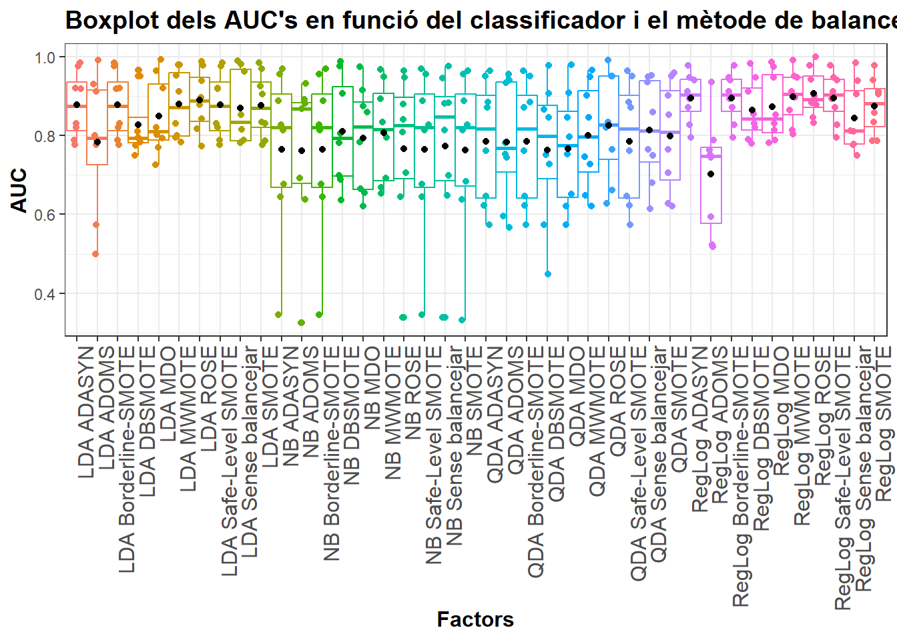
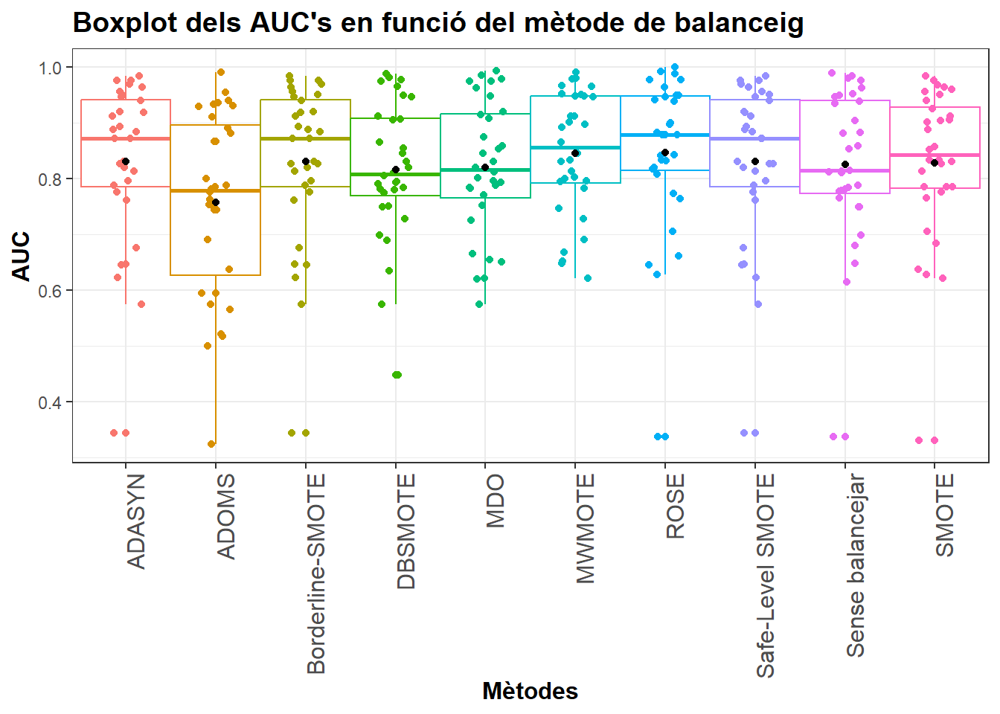
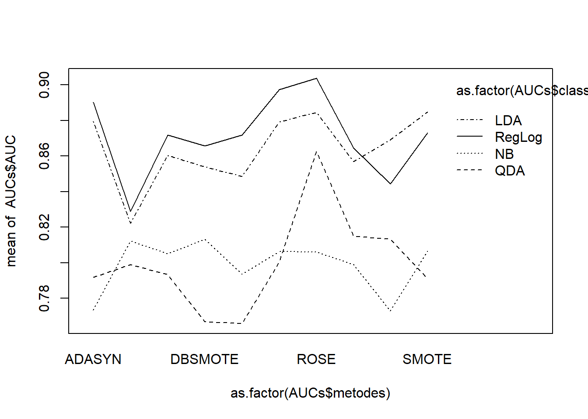
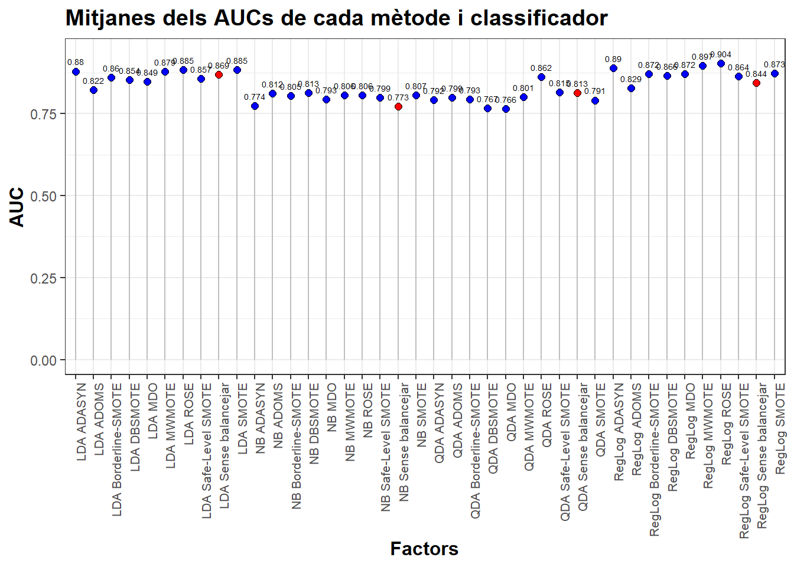

abalone9_18 <- read_csv("Taules_de_dades/abalone9_18/abalone9-18.dat", show_col_types = FALSE)
abalone9_18 <- abalone9_18 %>%
mutate(idx = c(1:nrow(abalone9_18))) %>% relocate(idx)%>% dplyr::select(-Sex)
abalone9_18_train <- read_csv("Taules_de_dades/abalone9_18/abalone9_18_train.csv", show_col_types = FALSE)
abalone9_18_test <- read_csv("Taules_de_dades/abalone9_18/abalone9_18_test.csv", show_col_types = FALSE)
IR_abalone9_18 <- round(as.numeric(table(abalone9_18$Class)[1]/table(abalone9_18$Class)[2]),3)Resultats experimentals
En aquest document realitzarem totes les classificacions i l’estudi estadístic ANOVA.
Dades
Carregam totes les taules de dades necessàries
abalone9_18
page_blocks_1_3_4
page_blocks_1_3_4 <- read_csv("Taules_de_dades/page_blocks_1_3_4/page-blocks-1-3_vs_4.dat", show_col_types = FALSE)
page_blocks_1_3_4 <- page_blocks_1_3_4 %>%
mutate(idx = c(1:nrow(page_blocks_1_3_4))) %>% relocate(idx)
page_blocks_1_3_4_train <- read_csv("Taules_de_dades/page_blocks_1_3_4/page_blocks_1_3_4_train.csv", show_col_types = FALSE)
page_blocks_1_3_4_test <- read_csv("Taules_de_dades/page_blocks_1_3_4/page_blocks_1_3_4_test.csv", show_col_types = FALSE)
IR_page_blocks_1_3_4 <- round(as.numeric(table(page_blocks_1_3_4$Class)[1]/table(page_blocks_1_3_4$Class)[2]),3)glass_0_1_6_vs_2
glass_0_1_6_vs_2 <- read_csv("Taules_de_dades/glass_0_1_6_vs_2/glass-0-1-6_vs_2.dat", show_col_types = FALSE)
glass_0_1_6_vs_2 <- glass_0_1_6_vs_2 %>%
mutate(idx = c(1:nrow(glass_0_1_6_vs_2))) %>% relocate(idx)
glass_0_1_6_vs_2_train <- read_csv("Taules_de_dades/glass_0_1_6_vs_2/glass_0_1_6_vs_2_train.csv", show_col_types = FALSE)
glass_0_1_6_vs_2_test <- read_csv("Taules_de_dades/glass_0_1_6_vs_2/glass_0_1_6_vs_2_test.csv", show_col_types = FALSE)
IR_glass_0_1_6_vs_2 <- round(as.numeric(table(glass_0_1_6_vs_2$Class)[1]/table(glass_0_1_6_vs_2$Class)[2]),3); IR_glass_0_1_6_vs_2[1] 10.294glass_0_1_4_6_vs_2
glass_0_1_4_6_vs_2 <- read_csv("Taules_de_dades/glass_0_1_4_6_vs_2/glass-0-1-4-6_vs_2.dat", show_col_types = FALSE)
glass_0_1_4_6_vs_2 <- glass_0_1_4_6_vs_2 %>%
mutate(idx = c(1:nrow(glass_0_1_4_6_vs_2))) %>% relocate(idx)
glass_0_1_4_6_vs_2_train <- read_csv("Taules_de_dades/glass_0_1_4_6_vs_2/glass_0_1_4_6_vs_2_train.csv", show_col_types = FALSE)
glass_0_1_4_6_vs_2_test <- read_csv("Taules_de_dades/glass_0_1_4_6_vs_2/glass_0_1_4_6_vs_2_test.csv", show_col_types = FALSE)
IR_glass_0_1_4_6_vs_2 <- round(as.numeric(table(glass_0_1_4_6_vs_2$Class)[1]/table(glass_0_1_4_6_vs_2$Class)[2]),3); IR_glass_0_1_4_6_vs_2[1] 11.059abalone19_peque
abalone19_peque <- read_csv("Taules_de_dades/abalone19/abalone19_peque.csv", show_col_types = FALSE)
abalone19_peque_train <- read_csv("Taules_de_dades/abalone19/abalone19_peque_train.csv", show_col_types = FALSE)
abalone19_peque_test <- read_csv("Taules_de_dades/abalone19/abalone19_peque_test.csv", show_col_types = FALSE)
IR_abalone19_peque <- round(as.numeric(table(abalone19_peque$Class)[1]/table(abalone19_peque$Class)[2]),3); IR_abalone19_peque[1] 9.125glass2
glass2 <- read_csv("Taules_de_dades/glass2/glass2.dat", show_col_types = FALSE)
glass2_train <- read_csv("Taules_de_dades/glass2/glass2_train.csv", show_col_types = FALSE)
glass2_test <- read_csv("Taules_de_dades/glass2/glass2_test.csv", show_col_types = FALSE)
IR_glass2 <- round(as.numeric(table(glass2$Class)[1]/table(glass2$Class)[2]),3); IR_glass2[1] 11.588page-blocks0
page_blocks0 <- read_csv("Taules_de_dades/page_blocks0/page-blocks0.dat", show_col_types = FALSE)
page_blocks0 <- page_blocks0 %>%
mutate(idx = c(1:nrow(page_blocks0))) %>% relocate(idx)
page_blocks0_train <- read_csv("Taules_de_dades/page_blocks0/page_blocks0_train.csv", show_col_types = FALSE)
page_blocks0_test <- read_csv("Taules_de_dades/page_blocks0/page_blocks0_test.csv", show_col_types = FALSE)
IR_page_blocks0 <- round(as.numeric(table(page_blocks0$Class)[1]/table(page_blocks0$Class)[2]),3)page_blocks0_1
page_blocks0_1 <- read_csv("Taules_de_dades/page_blocks0/page_blocks0_1.csv", show_col_types = FALSE)
page_blocks0_1_train <- read_csv("Taules_de_dades/page_blocks0/page_blocks0_1_train.csv", show_col_types = FALSE)
page_blocks0_1_test <- read_csv("Taules_de_dades/page_blocks0/page_blocks0_1_test.csv", show_col_types = FALSE)
IR_page_blocks0_1 <- round(as.numeric(table(page_blocks0_1$Class)[1]/table(page_blocks0_1$Class)[2]),3)page_blocks0_2
page_blocks0_2 <- read_csv("Taules_de_dades/page_blocks0/page_blocks0_2.csv", show_col_types = FALSE)
page_blocks0_2_train <- read_csv("Taules_de_dades/page_blocks0/page_blocks0_2_train.csv", show_col_types = FALSE)
page_blocks0_2_test <- read_csv("Taules_de_dades/page_blocks0/page_blocks0_2_test.csv", show_col_types = FALSE)
IR_page_blocks0_2 <- round(as.numeric(table(page_blocks0_2$Class)[1]/table(page_blocks0_2$Class)[2]),3)Analisi exploratori
Vegem ara una taula que resumeix la informació més important de cada taula de dades:
taula2_info <- matrix(NA, nrow = 8, ncol = 5)
# Convertir la matriz en un data frame
taula2_info <- as.data.frame(taula2_info)
# Asignar los nombres de las columnas
rownames(taula2_info) <- c("abalone9_18", "page_blocks_1_3_4", "glass_0_1_6_vs_2", "glass_0_1_4_6_vs_2", "abalone19_peque", "page_blocks0_1", "page_blocks0_2", "glass2")
# Asignar los nombres de las filas
colnames(taula2_info) <- c("#Exemples","#exemples negatius", "#exemples positius", "#variables quantitatives", "IR")
# pima, vehicle1, glass1, page_blocks0, new_thyroid1, abalone19, glass0, haberman, abalone9_18, page_blocks_1_3_4
taula2_info[,1] = c(nrow(abalone9_18), nrow(page_blocks_1_3_4), nrow(glass_0_1_6_vs_2), nrow(glass_0_1_4_6_vs_2), nrow(abalone19_peque), nrow(page_blocks0_1), nrow(page_blocks0_2), nrow(glass2))
taula2_info[,2] = c(as.numeric(table(abalone9_18$Class)[1]), as.numeric(table(page_blocks_1_3_4$Class)[1]), as.numeric(table(glass_0_1_6_vs_2$Class)[1]), as.numeric(table(glass_0_1_4_6_vs_2$Class)[1]), as.numeric(table(abalone19_peque$Class)[1]), as.numeric(table(page_blocks0_1$Class)[1]), as.numeric(table(page_blocks0_2$Class)[1]), as.numeric(table(glass2$Class)[1]))
taula2_info[,3] = c(as.numeric(table(abalone9_18$Class)[2]), as.numeric(table(page_blocks_1_3_4$Class)[2]), as.numeric(table(glass_0_1_6_vs_2$Class)[2]), as.numeric(table(glass_0_1_4_6_vs_2$Class)[2]), as.numeric(table(abalone19_peque$Class)[2]), as.numeric(table(page_blocks0_1$Class)[2]), as.numeric(table(page_blocks0_2$Class)[2]), as.numeric(table(glass2$Class)[2]))
taula2_info[,4] = c(ncol(abalone9_18), ncol(page_blocks_1_3_4), ncol(glass_0_1_6_vs_2), ncol(glass_0_1_4_6_vs_2), ncol(abalone19_peque), ncol(page_blocks0_1), ncol(page_blocks0_2), ncol(glass2))-1
taula2_info[,5] = c(IR_abalone9_18, IR_page_blocks_1_3_4, IR_glass_0_1_6_vs_2, IR_glass_0_1_4_6_vs_2, IR_abalone19_peque, IR_page_blocks0_1, IR_page_blocks0_2, IR_glass2)
# Mostrar la tabla usando kable
kable(taula2_info, align = 'c', caption = "Resum de les taules de dades desbalancejades", knitr.table.format = "rmarkdown")| #Exemples | #exemples negatius | #exemples positius | #variables quantitatives | IR | |
|---|---|---|---|---|---|
| abalone9_18 | 731 | 689 | 42 | 8 | 16.405 |
| page_blocks_1_3_4 | 472 | 444 | 28 | 11 | 15.857 |
| glass_0_1_6_vs_2 | 192 | 175 | 17 | 10 | 10.294 |
| glass_0_1_4_6_vs_2 | 205 | 188 | 17 | 10 | 11.059 |
| abalone19_peque | 324 | 292 | 32 | 8 | 9.125 |
| page_blocks0_1 | 556 | 500 | 56 | 11 | 8.929 |
| page_blocks0_2 | 556 | 500 | 56 | 11 | 8.929 |
| glass2 | 214 | 197 | 17 | 9 | 11.588 |
taula2_info_train_test <- matrix(NA, nrow = 8, ncol = 2)
# Convertir la matriz en un data frame
taula2_info_train_test <- as.data.frame(taula2_info_train_test)
# Asignar los nombres de las columnas
rownames(taula2_info_train_test) <- c("abalone9_18", "page_blocks_1_3_4", "glass_0_1_6_vs_2", "glass_0_1_4_6_vs_2", "abalone19_peque", "page_blocks0_1", "page_blocks0_2", "glass2")
# Asignar los nombres de las filas
colnames(taula2_info_train_test) <- c("# Training (maj, min)","# Test (maj, min)")
# pima, vehicle1, glass1, page_blocks0, new_thyroid1, abalone19, glass0, haberman, abalone9_18, page_blocks_1_3_4
taula2_info_train_test[,1] = c(paste(nrow(abalone9_18_train), "(",as.numeric(table(abalone9_18_train$Class)[1]) , ",", as.numeric(table(abalone9_18_train$Class)[2]), ")"), paste(nrow(page_blocks_1_3_4_train), "(",as.numeric(table(page_blocks_1_3_4_train$Class)[1]) , ",", as.numeric(table(page_blocks_1_3_4_train$Class)[2]), ")"), paste(nrow(glass_0_1_6_vs_2_train), "(",as.numeric(table(glass_0_1_6_vs_2_train$Class)[1]) , ",", as.numeric(table(glass_0_1_6_vs_2_train$Class)[2]), ")"), paste(nrow(glass_0_1_4_6_vs_2_train), "(",as.numeric(table(glass_0_1_4_6_vs_2_train$Class)[1]) , ",", as.numeric(table(glass_0_1_4_6_vs_2_train$Class)[2]), ")"), paste(nrow(abalone19_peque_train), "(",as.numeric(table(abalone19_peque_train$Class)[1]) , ",", as.numeric(table(abalone19_peque_train$Class)[2]), ")"), paste(nrow(page_blocks0_1_train), "(",as.numeric(table(page_blocks0_1_train$Class)[1]) , ",", as.numeric(table(page_blocks0_1_train$Class)[2]), ")"), paste(nrow(page_blocks0_2_train), "(",as.numeric(table(page_blocks0_2_train$Class)[1]) , ",", as.numeric(table(page_blocks0_2_train$Class)[2]), ")"), paste(nrow(glass2_train), "(",as.numeric(table(glass2_train$Class)[1]) , ",", as.numeric(table(glass2_train$Class)[2]), ")"))
taula2_info_train_test[,2] = c(paste(nrow(abalone9_18_test), "(",as.numeric(table(abalone9_18_test$Class)[1]) , ",", as.numeric(table(abalone9_18_test$Class)[2]), ")"), paste(nrow(page_blocks_1_3_4_test), "(",as.numeric(table(page_blocks_1_3_4_test$Class)[1]) , ",", as.numeric(table(page_blocks_1_3_4_test$Class)[2]), ")"), paste(nrow(glass_0_1_6_vs_2_test), "(",as.numeric(table(glass_0_1_6_vs_2_test$Class)[1]) , ",", as.numeric(table(glass_0_1_6_vs_2_test$Class)[2]), ")"), paste(nrow(glass_0_1_4_6_vs_2_test), "(",as.numeric(table(glass_0_1_4_6_vs_2_test$Class)[1]) , ",", as.numeric(table(glass_0_1_4_6_vs_2_test$Class)[2]), ")"), paste(nrow(abalone19_peque_test), "(",as.numeric(table(abalone19_peque_test$Class)[1]) , ",", as.numeric(table(abalone19_peque_test$Class)[2]), ")"), paste(nrow(page_blocks0_1_test), "(",as.numeric(table(page_blocks0_1_test$Class)[1]) , ",", as.numeric(table(page_blocks0_1_test$Class)[2]), ")"), paste(nrow(page_blocks0_2_test), "(",as.numeric(table(page_blocks0_2_test$Class)[1]) , ",", as.numeric(table(page_blocks0_2_test$Class)[2]), ")"), paste(nrow(glass2_test), "(",as.numeric(table(glass2_test$Class)[1]) , ",", as.numeric(table(glass2_test$Class)[2]), ")"))
# Mostrar la tabla usando kable
kable(taula2_info_train_test, align = 'c', caption = "Divisió entre training i test", knitr.table.format = "rmarkdown")| # Training (maj, min) | # Test (maj, min) | |
|---|---|---|
| abalone9_18 | 585 ( 553 , 32 ) | 146 ( 136 , 10 ) |
| page_blocks_1_3_4 | 378 ( 361 , 17 ) | 94 ( 83 , 11 ) |
| glass_0_1_6_vs_2 | 154 ( 141 , 13 ) | 38 ( 34 , 4 ) |
| glass_0_1_4_6_vs_2 | 164 ( 151 , 13 ) | 41 ( 37 , 4 ) |
| abalone19_peque | 259 ( 234 , 25 ) | 65 ( 58 , 7 ) |
| page_blocks0_1 | 445 ( 404 , 41 ) | 111 ( 96 , 15 ) |
| page_blocks0_2 | 445 ( 405 , 40 ) | 111 ( 95 , 16 ) |
| glass2 | 171 ( 158 , 13 ) | 43 ( 39 , 4 ) |
Dades balancejades
A continuació carregarem les taules de dades balancejades realitzades en el document “Balanceig.qmd”
abalone9_18_train_SMOTE <- read_csv("Taules_de_dades/SMOTE/abalone9_18_train_SMOTE.csv", show_col_types = FALSE)
abalone9_18_train_BorderlineSMOTE <- read_csv("Taules_de_dades/abalone9_18/abalone9_18_train_BorderlineSMOTE.csv", show_col_types = FALSE)
abalone9_18_train_ADOMS <- read_csv("Taules_de_dades/abalone9_18/abalone9_18_train_ADOMS.csv", show_col_types = FALSE)
abalone9_18_train_ADASYN <- read_csv("Taules_de_dades/abalone9_18/abalone9_18_train_ADASYN.csv", show_col_types = FALSE)
abalone9_18_train_SLSMOTE <- read_csv("Taules_de_dades/abalone9_18/abalone9_18_train_SLSMOTE.csv", show_col_types = FALSE)
abalone9_18_train_DBSMOTE <- read_csv("Taules_de_dades/abalone9_18/abalone9_18_train_DBSMOTE.csv", show_col_types = FALSE) # feta amb la funcio de smotefamily::dbsmote
abalone9_18_train_MWMOTE <- read_csv("Taules_de_dades/abalone9_18/abalone9_18_train_MWMOTE.csv", show_col_types = FALSE)
abalone9_18_train_MDO <- read_csv("Taules_de_dades/abalone9_18/abalone9_18_train_MDO.csv", show_col_types = FALSE)
abalone9_18_train_ROSE <- read_csv("Taules_de_dades/abalone9_18/abalone9_18_train_ROSE.csv", show_col_types = FALSE)page_blocks_1_3_4_train_SMOTE <- read_csv("Taules_de_dades/SMOTE/page_blocks_1_3_4_train_SMOTE.csv", show_col_types = FALSE)
page_blocks_1_3_4_train_BorderlineSMOTE <- read_csv("Taules_de_dades/page_blocks_1_3_4/page_blocks_1_3_4_train_BorderlineSMOTE.csv", show_col_types = FALSE)
page_blocks_1_3_4_train_ADOMS <- read_csv("Taules_de_dades/page_blocks_1_3_4/page_blocks_1_3_4_train_ADOMS.csv", show_col_types = FALSE)
page_blocks_1_3_4_train_ADASYN <- read_csv("Taules_de_dades/page_blocks_1_3_4/page_blocks_1_3_4_train_ADASYN.csv", show_col_types = FALSE)
page_blocks_1_3_4_train_SLSMOTE <- read_csv("Taules_de_dades/page_blocks_1_3_4/page_blocks_1_3_4_train_SLSMOTE.csv", show_col_types = FALSE)
page_blocks_1_3_4_train_DBSMOTE <- read_csv("Taules_de_dades/page_blocks_1_3_4/page_blocks_1_3_4_train_DBSMOTE.csv", show_col_types = FALSE) # feta amb la funcio de smotefamily::dbsmote
page_blocks_1_3_4_train_MWMOTE <- read_csv("Taules_de_dades/page_blocks_1_3_4/page_blocks_1_3_4_train_MWMOTE.csv", show_col_types = FALSE)
page_blocks_1_3_4_train_MDO <- read_csv("Taules_de_dades/page_blocks_1_3_4/page_blocks_1_3_4_train_MDO.csv", show_col_types = FALSE)
page_blocks_1_3_4_train_ROSE <- read_csv("Taules_de_dades/page_blocks_1_3_4/page_blocks_1_3_4_train_ROSE.csv", show_col_types = FALSE)glass_0_1_6_vs_2_train_SMOTE <- read_csv("Taules_de_dades/SMOTE/glass_0_1_6_vs_2_train_SMOTE.csv", show_col_types = FALSE)
glass_0_1_6_vs_2_train_BorderlineSMOTE <- read_csv("Taules_de_dades/glass_0_1_6_vs_2/glass_0_1_6_vs_2_train_BorderlineSMOTE.csv", show_col_types = FALSE)
glass_0_1_6_vs_2_train_ADOMS <- read_csv("Taules_de_dades/glass_0_1_6_vs_2/glass_0_1_6_vs_2_train_ADOMS.csv", show_col_types = FALSE)
glass_0_1_6_vs_2_train_ADASYN <- read_csv("Taules_de_dades/glass_0_1_6_vs_2/glass_0_1_6_vs_2_train_ADASYN.csv", show_col_types = FALSE)
glass_0_1_6_vs_2_train_SLSMOTE <- read_csv("Taules_de_dades/glass_0_1_6_vs_2/glass_0_1_6_vs_2_train_SLSMOTE.csv", show_col_types = FALSE)
glass_0_1_6_vs_2_train_DBSMOTE <- read_csv("Taules_de_dades/glass_0_1_6_vs_2/glass_0_1_6_vs_2_train_DBSMOTE.csv", show_col_types = FALSE)
glass_0_1_6_vs_2_train_MWMOTE <- read_csv("Taules_de_dades/glass_0_1_6_vs_2/glass_0_1_6_vs_2_train_MWMOTE.csv", show_col_types = FALSE)
glass_0_1_6_vs_2_train_MDO <- read_csv("Taules_de_dades/glass_0_1_6_vs_2/glass_0_1_6_vs_2_train_MDO.csv", show_col_types = FALSE)
glass_0_1_6_vs_2_train_ROSE <- read_csv("Taules_de_dades/glass_0_1_6_vs_2/glass_0_1_6_vs_2_train_ROSE.csv", show_col_types = FALSE)glass_0_1_4_6_vs_2_train_SMOTE <- read_csv("Taules_de_dades/SMOTE/glass_0_1_4_6_vs_2_train_SMOTE.csv", show_col_types = FALSE)
glass_0_1_4_6_vs_2_train_BorderlineSMOTE <- read_csv("Taules_de_dades/glass_0_1_4_6_vs_2/glass_0_1_4_6_vs_2_train_BorderlineSMOTE.csv", show_col_types = FALSE)
glass_0_1_4_6_vs_2_train_ADOMS <- read_csv("Taules_de_dades/glass_0_1_4_6_vs_2/glass_0_1_4_6_vs_2_train_ADOMS.csv", show_col_types = FALSE)
glass_0_1_4_6_vs_2_train_ADASYN <- read_csv("Taules_de_dades/glass_0_1_4_6_vs_2/glass_0_1_4_6_vs_2_train_ADASYN.csv", show_col_types = FALSE)
glass_0_1_4_6_vs_2_train_SLSMOTE <- read_csv("Taules_de_dades/glass_0_1_4_6_vs_2/glass_0_1_4_6_vs_2_train_SLSMOTE.csv", show_col_types = FALSE)
glass_0_1_4_6_vs_2_train_DBSMOTE <- read_csv("Taules_de_dades/glass_0_1_4_6_vs_2/glass_0_1_4_6_vs_2_train_DBSMOTE.csv", show_col_types = FALSE) # feta amb la funcio de smotefamily::dbsmote
glass_0_1_4_6_vs_2_train_MWMOTE <- read_csv("Taules_de_dades/glass_0_1_4_6_vs_2/glass_0_1_4_6_vs_2_train_MWMOTE.csv", show_col_types = FALSE)
glass_0_1_4_6_vs_2_train_MDO <- read_csv("Taules_de_dades/glass_0_1_4_6_vs_2/glass_0_1_4_6_vs_2_train_MDO.csv", show_col_types = FALSE)
glass_0_1_4_6_vs_2_train_ROSE <- read_csv("Taules_de_dades/glass_0_1_4_6_vs_2/glass_0_1_4_6_vs_2_train_ROSE.csv", show_col_types = FALSE)abalone19_peque_train_SMOTE <- read_csv("Taules_de_dades/SMOTE/abalone19_peque_train_SMOTE.csv", show_col_types = FALSE)
abalone19_peque_train_BorderlineSMOTE <- read_csv("Taules_de_dades/abalone19/abalone19_peque_train_BorderlineSMOTE.csv", show_col_types = FALSE)
abalone19_peque_train_ADOMS <- read_csv("Taules_de_dades/abalone19/abalone19_peque_train_ADOMS.csv", show_col_types = FALSE)
abalone19_peque_train_ADASYN <- read_csv("Taules_de_dades/abalone19/abalone19_peque_train_ADASYN.csv", show_col_types = FALSE)
abalone19_peque_train_SLSMOTE <- read_csv("Taules_de_dades/abalone19/abalone19_peque_train_SLSMOTE.csv", show_col_types = FALSE)
abalone19_peque_train_DBSMOTE <- read_csv("Taules_de_dades/abalone19/abalone19_peque_train_DBSMOTE.csv", show_col_types = FALSE) # feta amb la funcio de smotefamily::dbsmote
abalone19_peque_train_MWMOTE <- read_csv("Taules_de_dades/abalone19/abalone19_peque_train_MWMOTE.csv", show_col_types = FALSE)
abalone19_peque_train_MDO <- read_csv("Taules_de_dades/abalone19/abalone19_peque_train_MDO.csv", show_col_types = FALSE)
abalone19_peque_train_ROSE <- read_csv("Taules_de_dades/abalone19/abalone19_peque_train_ROSE.csv", show_col_types = FALSE)page_blocks0_1_train_SMOTE <- read_csv("Taules_de_dades/SMOTE/page_blocks0_1_train_SMOTE.csv", show_col_types = FALSE)
page_blocks0_1_train_BorderlineSMOTE <- read_csv("Taules_de_dades/page_blocks0/page_blocks0_1_train_BorderlineSMOTE.csv", show_col_types = FALSE)
page_blocks0_1_train_ADOMS <- read_csv("Taules_de_dades/page_blocks0/page_blocks0_1_train_ADOMS.csv", show_col_types = FALSE)
page_blocks0_1_train_ADASYN <- read_csv("Taules_de_dades/page_blocks0/page_blocks0_1_train_ADASYN.csv", show_col_types = FALSE)
page_blocks0_1_train_SLSMOTE <- read_csv("Taules_de_dades/page_blocks0/page_blocks0_1_train_SLSMOTE.csv", show_col_types = FALSE)
page_blocks0_1_train_DBSMOTE <- read_csv("Taules_de_dades/page_blocks0/page_blocks0_1_train_DBSMOTE.csv", show_col_types = FALSE)
page_blocks0_1_train_MWMOTE <- read_csv("Taules_de_dades/page_blocks0/page_blocks0_1_train_MWMOTE.csv", show_col_types = FALSE)
page_blocks0_1_train_MDO <- read_csv("Taules_de_dades/page_blocks0/page_blocks0_1_train_MDO.csv", show_col_types = FALSE)
page_blocks0_1_train_ROSE <- read_csv("Taules_de_dades/page_blocks0/page_blocks0_1_train_ROSE.csv", show_col_types = FALSE)page_blocks0_2_train_SMOTE <- read_csv("Taules_de_dades/SMOTE/page_blocks0_2_train_SMOTE.csv", show_col_types = FALSE)
page_blocks0_2_train_BorderlineSMOTE <- read_csv("Taules_de_dades/page_blocks0/page_blocks0_2_train_BorderlineSMOTE.csv", show_col_types = FALSE)
page_blocks0_2_train_ADOMS <- read_csv("Taules_de_dades/page_blocks0/page_blocks0_2_train_ADOMS.csv", show_col_types = FALSE)
page_blocks0_2_train_ADASYN <- read_csv("Taules_de_dades/page_blocks0/page_blocks0_2_train_ADASYN.csv", show_col_types = FALSE)
page_blocks0_2_train_SLSMOTE <- read_csv("Taules_de_dades/page_blocks0/page_blocks0_2_train_SLSMOTE.csv", show_col_types = FALSE)
page_blocks0_2_train_DBSMOTE <- read_csv("Taules_de_dades/page_blocks0/page_blocks0_2_train_DBSMOTE.csv", show_col_types = FALSE)
page_blocks0_2_train_MWMOTE <- read_csv("Taules_de_dades/page_blocks0/page_blocks0_2_train_MWMOTE.csv", show_col_types = FALSE)
page_blocks0_2_train_MDO <- read_csv("Taules_de_dades/page_blocks0/page_blocks0_2_train_MDO.csv", show_col_types = FALSE)
page_blocks0_2_train_ROSE <- read_csv("Taules_de_dades/page_blocks0/page_blocks0_2_train_ROSE.csv", show_col_types = FALSE)glass2_train_SMOTE <- read_csv("Taules_de_dades/SMOTE/glass2_train_SMOTE.csv", show_col_types = FALSE)
glass2_train_BorderlineSMOTE <- read_csv("Taules_de_dades/glass2/glass2_train_BorderlineSMOTE.csv", show_col_types = FALSE)
glass2_train_ADOMS <- read_csv("Taules_de_dades/glass2/glass2_train_ADOMS.csv", show_col_types = FALSE)
glass2_train_ADASYN <- read_csv("Taules_de_dades/glass2/glass2_train_ADASYN.csv", show_col_types = FALSE)
glass2_train_SLSMOTE <- read_csv("Taules_de_dades/glass2/glass2_train_SLSMOTE.csv", show_col_types = FALSE)
glass2_train_DBSMOTE <- read_csv("Taules_de_dades/glass2/glass2_train_DBSMOTE.csv", show_col_types = FALSE)
glass2_train_MWMOTE <- read_csv("Taules_de_dades/glass2/glass2_train_MWMOTE.csv", show_col_types = FALSE)
glass2_train_MDO <- read_csv("Taules_de_dades/glass2/glass2_train_MDO.csv", show_col_types = FALSE)
glass2_train_ROSE <- read_csv("Taules_de_dades/glass2/glass2_train_ROSE.csv", show_col_types = FALSE)Taula informativa sobre els balanceig
taula_info_balanceig <- matrix(NA, nrow = 8, ncol = 10)
# Convertir la matriz en un data frame
taula_info_balanceig <- as.data.frame(taula_info_balanceig)
# Asignar los nombres de las columnas
rownames(taula_info_balanceig) <- c("abalone9_18", "page_blocks_1_3_4", "glass_0_1_6_vs_2", "glass_0_1_4_6_vs_2", "abalone19_peque", "page_blocks0_1", "page_blocks0_2", "glass2")
# Asignar los nombres de las filas
colnames(taula_info_balanceig) <- c("#negatius", "#positius SMOTE", "#positius Borderline-SMOTE", "#positius ADOMS", "#positius ADASYN", "#positius ROSE", "#positius Safe-Level SMOTE", "#positius DBSMOTE", "#positius MWMOTE", "#positius MDO")
# "#exemples positius SMOTE", "#exemples positius Borderline-SMOTE", "#exemples positius ADOMS", "#exemples positius ADASYN", "#exemples positius ROSE", "#exemples positius Safe-Level SMOTE", "#exemples positius DBSMOTE", "#exemples positius MWMOTE", "#exemples positius MDO"
# pima, vehicle1, glass1, page_blocks0, new_thyroid1, abalone19, glass0, haberman, abalone9_18, page_blocks_1_3_4
taula_info_balanceig[,1] = c(as.numeric(table(abalone9_18_train$Class)[1]), as.numeric(table(page_blocks_1_3_4_train$Class)[1]), as.numeric(table(glass_0_1_6_vs_2_train$Class)[1]), as.numeric(table(glass_0_1_4_6_vs_2_train$Class)[1]), as.numeric(table(abalone19_peque_train$Class)[1]), as.numeric(table(page_blocks0_1_train$Class)[1]), as.numeric(table(page_blocks0_2_train$Class)[1]), as.numeric(table(glass2_train$Class)[1]))
taula_info_balanceig[,2] = c(as.numeric(table(abalone9_18_train_SMOTE$Class)[2]), as.numeric(table(page_blocks_1_3_4_train_SMOTE$Class)[2]), as.numeric(table(glass_0_1_6_vs_2_train_SMOTE$Class)[2]), as.numeric(table(glass_0_1_4_6_vs_2_train_SMOTE$Class)[2]), as.numeric(table(abalone19_peque_train_SMOTE$Class)[2]), as.numeric(table(page_blocks0_1_train_SMOTE$Class)[2]), as.numeric(table(page_blocks0_2_train_SMOTE$Class)[2]), as.numeric(table(glass2_train_SMOTE$Class)[2]))
taula_info_balanceig[,3] = c(as.numeric(table(abalone9_18_train_BorderlineSMOTE$Class)[2]), as.numeric(table(page_blocks_1_3_4_train_BorderlineSMOTE$Class)[2]), as.numeric(table(glass_0_1_6_vs_2_train_BorderlineSMOTE$Class)[2]), as.numeric(table(glass_0_1_4_6_vs_2_train_BorderlineSMOTE$Class)[2]), as.numeric(table(abalone19_peque_train_BorderlineSMOTE$Class)[2]), as.numeric(table(page_blocks0_1_train_BorderlineSMOTE$Class)[2]), as.numeric(table(page_blocks0_2_train_BorderlineSMOTE$Class)[2]), as.numeric(table(glass2_train_BorderlineSMOTE$Class)[2]))
taula_info_balanceig[,4] = c(as.numeric(table(abalone9_18_train_ADOMS$Class)[2]), as.numeric(table(page_blocks_1_3_4_train_ADOMS$Class)[2]), as.numeric(table(glass_0_1_6_vs_2_train_ADOMS$Class)[2]), as.numeric(table(glass_0_1_4_6_vs_2_train_ADOMS$Class)[2]), as.numeric(table(abalone19_peque_train_ADOMS$Class)[2]), as.numeric(table(page_blocks0_1_train_ADOMS$Class)[2]), as.numeric(table(page_blocks0_2_train_ADOMS$Class)[2]), as.numeric(table(glass2_train_ADOMS$Class)[2]))
taula_info_balanceig[,5] = c(as.numeric(table(abalone9_18_train_ADASYN$Class)[2]), as.numeric(table(page_blocks_1_3_4_train_ADASYN$Class)[2]), as.numeric(table(glass_0_1_6_vs_2_train_ADASYN$Class)[2]), as.numeric(table(glass_0_1_4_6_vs_2_train_ADASYN$Class)[2]), as.numeric(table(abalone19_peque_train_ADASYN$Class)[2]), as.numeric(table(page_blocks0_1_train_ADASYN$Class)[2]), as.numeric(table(page_blocks0_2_train_ADASYN$Class)[2]), as.numeric(table(glass2_train_ADASYN$Class)[2]))
taula_info_balanceig[,6] = c(as.numeric(table(abalone9_18_train_ROSE$Class)[2]), as.numeric(table(page_blocks_1_3_4_train_ROSE$Class)[2]), as.numeric(table(glass_0_1_6_vs_2_train_ROSE$Class)[2]), as.numeric(table(glass_0_1_4_6_vs_2_train_ROSE$Class)[2]), as.numeric(table(abalone19_peque_train_ROSE$Class)[2]), as.numeric(table(page_blocks0_1_train_ROSE$Class)[2]), as.numeric(table(page_blocks0_2_train_ROSE$Class)[2]), as.numeric(table(glass2_train_ROSE$Class)[2]))
# taula_info_balanceig[,7] = c(as.numeric(table(pima$Class)[2]), as.numeric(table(vehicle1$Class)[2]), as.numeric(table(glass1$Class)[2]), as.numeric(table(page_blocks0$Class)[2]), as.numeric(table(new_thyroid1$Class)[2]), as.numeric(table(abalone19$Class)[2]), as.numeric(table(glass0$Class)[2]), as.numeric(table(haberman$Class)[2]), as.numeric(table(abalone9_18$Class)[2]), as.numeric(table(page_blocks_1_3_4$Class)[2]))
taula_info_balanceig[,7] = c(as.numeric(table(abalone9_18_train_SLSMOTE$Class)[2]), as.numeric(table(page_blocks_1_3_4_train_SLSMOTE$Class)[2]), as.numeric(table(glass_0_1_6_vs_2_train_SLSMOTE$Class)[2]), as.numeric(table(glass_0_1_4_6_vs_2_train_SLSMOTE$Class)[2]), as.numeric(table(abalone19_peque_train_SLSMOTE$Class)[2]), as.numeric(table(page_blocks0_1_train_SLSMOTE$Class)[2]), as.numeric(table(page_blocks0_2_train_SLSMOTE$Class)[2]), as.numeric(table(glass2_train_SLSMOTE$Class)[2]))
taula_info_balanceig[,8] = c(as.numeric(table(abalone9_18_train_DBSMOTE$Class)[2]), as.numeric(table(page_blocks_1_3_4_train_DBSMOTE$Class)[2]), as.numeric(table(glass_0_1_6_vs_2_train_DBSMOTE$Class)[2]), as.numeric(table(glass_0_1_4_6_vs_2_train_DBSMOTE$Class)[2]), as.numeric(table(abalone19_peque_train_DBSMOTE$Class)[2]), as.numeric(table(page_blocks0_1_train_DBSMOTE$Class)[2]), as.numeric(table(page_blocks0_2_train_DBSMOTE$Class)[2]), as.numeric(table(glass2_train_DBSMOTE$Class)[2]))
taula_info_balanceig[,9] =c(as.numeric(table(abalone9_18_train_MWMOTE$Class)[2]), as.numeric(table(page_blocks_1_3_4_train_MWMOTE$Class)[2]), as.numeric(table(glass_0_1_6_vs_2_train_MWMOTE$Class)[2]), as.numeric(table(glass_0_1_4_6_vs_2_train_MWMOTE$Class)[2]), as.numeric(table(abalone19_peque_train_MWMOTE$Class)[2]), as.numeric(table(page_blocks0_1_train_MWMOTE$Class)[2]), as.numeric(table(page_blocks0_2_train_MWMOTE$Class)[2]), as.numeric(table(glass2_train_MWMOTE$Class)[2]))
taula_info_balanceig[,10] = c(as.numeric(table(abalone9_18_train_MDO$Class)[2]), as.numeric(table(page_blocks_1_3_4_train_MDO$Class)[2]), as.numeric(table(glass_0_1_6_vs_2_train_MDO$Class)[2]), as.numeric(table(glass_0_1_4_6_vs_2_train_MDO$Class)[2]), as.numeric(table(abalone19_peque_train_MDO$Class)[2]), as.numeric(table(page_blocks0_1_train_MDO$Class)[2]), as.numeric(table(page_blocks0_2_train_MDO$Class)[2]), as.numeric(table(glass2_train_MDO$Class)[2]))
# Mostrar la tabla usando kable
kable(taula_info_balanceig, align = 'c', caption = "Resum de les taules de dades balancejades", knitr.table.format = "rmarkdown")| #negatius | #positius SMOTE | #positius Borderline-SMOTE | #positius ADOMS | #positius ADASYN | #positius ROSE | #positius Safe-Level SMOTE | #positius DBSMOTE | #positius MWMOTE | #positius MDO | |
|---|---|---|---|---|---|---|---|---|---|---|
| abalone9_18 | 553 | 512 | 127 | 332 | 483 | 476 | 63 | 508 | 502 | 573 |
| page_blocks_1_3_4 | 361 | 357 | 89 | 192 | 309 | 314 | 34 | 325 | 217 | 366 |
| glass_0_1_6_vs_2 | 141 | 156 | 112 | 123 | 126 | 121 | 26 | 22 | 123 | 147 |
| glass_0_1_4_6_vs_2 | 151 | 143 | 101 | 123 | 135 | 121 | 22 | 123 | 133 | 155 |
| abalone19_peque | 234 | 225 | 110 | 205 | 198 | 222 | 41 | 201 | 225 | 240 |
| page_blocks0_1 | 404 | 328 | 291 | 366 | 363 | 338 | 55 | 60 | 241 | 425 |
| page_blocks0_2 | 405 | 360 | 290 | 360 | 358 | 337 | 51 | 62 | 240 | 422 |
| glass2 | 158 | 156 | 85 | 123 | 137 | 160 | 26 | 23 | 123 | 161 |
Càlcul dels AUC
Funcions AUC
Realitzem una funció que ens doni l’AUC de cada classificador, donat el conjunt training i test:
# AUC Regressió logística
AUC_RegLog <- function(training, test){
# Training: Conjunt de dades d'entrenament (balancejades o no)
# Test: Conjunt de dades del test
# Outpunt: AUC de la classificació utilitzant Regressió logística
D1 <- training %>% mutate(Class = case_when(
Class == "positive" ~ 1,
Class == "negative" ~ 0)) %>% dplyr::select(-idx)
D2 <- test %>% dplyr::select(-c(idx))
glm.fit <- glm(Class ~., data = D1, family = binomial)
glm.probs <- predict(glm.fit, D2, type = "response")
roc <- roc(D2$Class,glm.probs)
AUC <- auc(roc)
return(AUC)
}
# AUC LDA
AUC_LDA <- function(training, test){
# Training: Conjunt de dades d'entrenament (balancejades o no)
# Test: Conjunt de dades del test
# Outpunt: AUC de la classificació utilitzant LDA
lda.fit <- lda(Class ~ ., data = training[,-1])
lda.pred <- predict(lda.fit, test[,-c(1)], type = "response")
roc <- roc(test$Class, lda.pred$posterior[,2])
AUC_LDA <- auc(roc)
return(AUC_LDA)
}
# AUC QDA
AUC_QDA <- function(training, test){
# Training: Conjunt de dades d'entrenament (balancejades o no)
# Test: Conjunt de dades del test
# Outpunt: AUC de la classificació utilitzant QDA
qda.fit <- qda(Class ~ ., data = training[,-1])
qda.pred <- predict(qda.fit, test[,-c(1)], type = "response")
roc <- roc(test$Class, qda.pred$posterior[,2])
AUC_QDA <- auc(roc)
return(AUC_QDA)
}
AUC_NB <- function(training, test){
# Training: Conjunt de dades d'entrenament (balancejades o no)
# Test: Conjunt de dades del test
# Outpunt: AUC de la classificació utilitzant Naive Bayes
nb.fit <- naiveBayes(Class ~ ., data = training[,-1])
nb.probs <- predict(nb.fit, test[,-c(1)], type = "raw")
roc <- roc(test$Class, nb.probs[,2])
AUC_NB <- auc(roc)
return(AUC_NB)
}# AUC Regressió logística
AUC_RegLog <- function(training, test){
# Training: Conjunt de dades d'entrenament (balancejades o no)
# Test: Conjunt de dades del test
# Outpunt: AUC de la classificació utilitzant Regressió logística
D1 <- training %>% mutate(Class = case_when(
Class == "positive" ~ 1,
Class == "negative" ~ 0)) %>% dplyr::select(-idx)
D2 <- test %>% dplyr::select(-c(idx,Class))
Real_01 <- test %>% mutate(Class = case_when(
Class == "positive" ~ 1,
Class == "negative" ~ 0)) %>% dplyr::pull(Class)
glm.fit <- glm(Class ~ ., data = D1, family = binomial) # Model de classificació de Regressió Logística
glm.probs <- predict(glm.fit, D2, type = "response")
glm.pred <- rep(0,nrow(D2))
glm.pred[glm.probs > 0.5] <- 1
pred_fit_RL <- prediction(glm.pred , Real_01)
auc_RL <- as.numeric(performance(pred_fit_RL,"auc")@y.values)
return(auc_RL)
}
# AUC LDA
AUC_LDA <- function(training, test){
# Training: Conjunt de dades d'entrenament (balancejades o no)
# Test: Conjunt de dades del test
# Outpunt: AUC de la classificació utilitzant LDA
Real_01 <- test %>% mutate(Class = case_when(
Class == "positive" ~ 1,
Class == "negative" ~ 0)) %>% dplyr::pull(Class)
lda.fit <- lda(Class ~ ., data = training[,-1]) # Model de classificació LDA
lda.pred <- predict(lda.fit, test[,-c(1,ncol(test))], type = "response")
Pred_01_LDA <- rep(0,nrow(test))
Pred_01_LDA[as.vector(lda.pred$class) == "positive"] <- 1
pred_fit_LDA <- prediction(Pred_01_LDA , Real_01)
auc_LDA <- as.numeric(performance(pred_fit_LDA,"auc")@y.values)
return(auc_LDA)
}
# AUC QDA
AUC_QDA <- function(training, test){
# Training: Conjunt de dades d'entrenament (balancejades o no)
# Test: Conjunt de dades del test
# Outpunt: AUC de la classificació utilitzant QDA
Real_01 <- test %>% mutate(Class = case_when(
Class == "positive" ~ 1,
Class == "negative" ~ 0)) %>% dplyr::pull(Class)
qda.fit <- qda(Class ~ ., data = training[,-1]) # Model de classificació LDA
qda.pred <- predict(qda.fit, test[,-c(1,ncol(test))], type = "response")
Pred_01_QDA <- rep(0,nrow(test))
Pred_01_QDA[as.vector(qda.pred$class) == "positive"] <- 1
pred_fit_QDA <- prediction(Pred_01_QDA , Real_01)
auc_QDA <- as.numeric(performance(pred_fit_QDA,"auc")@y.values)
return(auc_QDA)
}
AUC_NB <- function(training, test){
# Training: Conjunt de dades d'entrenament (balancejades o no)
# Test: Conjunt de dades del test
# Outpunt: AUC de la classificació utilitzant Naive Bayes
Real_01 <- test %>% mutate(Class = case_when(
Class == "positive" ~ 1,
Class == "negative" ~ 0)) %>% dplyr::pull(Class)
nb.fit <- naiveBayes(Class ~ ., data = training[,-1]) # Model classificació Naive Bayes
nb.probs <- predict(nb.fit, test[,-c(1,ncol(test))], type = "raw")
Pred_01_nb <- rep(0,nrow(test))
Pred_01_nb[nb.probs[,2] > 0.5] <- 1
pred_fit_nb <- prediction(Pred_01_nb , Real_01)
auc_nb <- as.numeric(performance(pred_fit_nb,"auc")@y.values)
return(auc_nb)
}A continuació aplicarem a totes les taules de dades balancejaces cada un dels quatre classificadors. Finalment, resumirem tots els AUC calculats en diverses taules.
Sense balanceig
Calcularem els AUCs resultants de la classificació utilitzant els conjunt d’entrenament sense balancejar.
abalone9_18
Classificació:
# Regressió logística:
D1_abalone9_18 <- abalone9_18_train %>% mutate(Class = case_when(
Class == "positive" ~ 1,
Class == "negative" ~ 0)) %>% dplyr::select(-idx)
D2_abalone9_18 <- abalone9_18_test %>% dplyr::select(-c(idx))
glm.fit_abalone9_18 <- glm(Class ~., data = D1_abalone9_18, family = binomial)
glm.probs_abalone9_18 <- predict(glm.fit_abalone9_18, D2_abalone9_18, type = "response")
roc <- roc(D2_abalone9_18$Class,glm.probs_abalone9_18)Setting levels: control = negative, case = positiveSetting direction: controls < casesplot(roc,col="red",lwd=2, main="Corba ROC del classificador Regressió Logística del \n conjunt de dades `abalone9_18` sense balancejar",cex.main=1.1)AUC_RegLog_abalone9_18 <- auc(roc); AUC_RegLog_abalone9_18Area under the curve: 0.939# LDA:
lda.fit_abalone9_18 <- lda(Class ~ ., data = abalone9_18_train[,-1])
lda.pred_abalone9_18 <- predict(lda.fit_abalone9_18, abalone9_18_test[,-c(1)], type = "response")
prediccions.LDA <- as.factor(ifelse(lda.pred_abalone9_18$Class=="negative",0,1))
roc <- roc(abalone9_18_test$Class,lda.pred_abalone9_18$posterior[,2])Setting levels: control = negative, case = positiveSetting direction: controls < casesplot(roc,col="red",lwd=2,main="Corba ROC i AUC del classificador LDA del \n conjunt de dades `abalone9_18` sense balancejar",cex.main=1.1)AUC_LDA_abalone9_18 <- auc(roc); AUC_LDA_abalone9_18Area under the curve: 0.9625## Matriu de confusió:
table(lda.pred_abalone9_18$class, abalone9_18_test$Class)
# Corba ROC i AUC del classificador LDA sense balanceig
Pred_01_LDA_abalone9_18 <- rep(0,nrow(D2_abalone9_18))
Pred_01_LDA_abalone9_18[as.vector(lda.pred_abalone9_18$class) == "positive"] <- 1
pred_fit_LDA_abalone9_18 <- prediction(Pred_01_LDA_abalone9_18 , Real_01_abalone9_18)
plot(performance(pred_fit_LDA_abalone9_18, "tpr", "fpr"), main = "Corba ROC i AUC del classificador LDA del \n conjunt de dades `abalone9_18` sense balancejar",cex.main=1.1)
abline(a=0,b=1,col="blue",lty=2)
grid()
AUC_LDA_abalone9_18 <- as.numeric(performance(pred_fit_LDA_abalone9_18,"auc")@y.values)
legend("bottomright",legend=paste("AUC =",round(AUC_LDA_abalone9_18,4)))# QDA:
qda.fit_abalone9_18 <- qda(Class ~ ., data = abalone9_18_train[,-1])
qda.pred_abalone9_18 <- predict(qda.fit_abalone9_18, abalone9_18_test[,-c(1)], type = "response")
prediccions.QDA <- as.factor(ifelse(qda.pred_abalone9_18$Class=="negative",0,1))
roc <- roc(abalone9_18_test$Class,qda.pred_abalone9_18$posterior[,2])Setting levels: control = negative, case = positiveSetting direction: controls < casesplot(roc,col="red",lwd=2,main="Corba ROC i AUC del classificador QDA \n del conjunt de dades `abalone9_18` sense balancejarv")AUC_QDA_abalone9_18 <- auc(roc); AUC_QDA_abalone9_18Area under the curve: 0.9346# Corba ROC i AUC del classificador QDA sense balanceig
Pred_01_QDA_abalone9_18 <- rep(0,nrow(D2_abalone9_18))
Pred_01_QDA_abalone9_18[as.vector(qda.pred_abalone9_18$class) == "positive"] <- 1
pred_fit_QDA_abalone9_18 <- prediction(Pred_01_QDA_abalone9_18 , Real_01_abalone9_18)
plot(performance(pred_fit_QDA_abalone9_18, "tpr", "fpr"), main = "Corba ROC i AUC del classificador QDA del \n conjunt de dades `abalone9_18` sense balancejar",cex.main=1.1)
abline(a=0,b=1,col="blue",lty=2)
grid()
AUC_QDA_abalone9_18 <- as.numeric(performance(pred_fit_QDA_abalone9_18,"auc")@y.values)
legend("bottomright",legend=paste("AUC =",round(AUC_QDA_abalone9_18,4)))# Naive Bayes
nb.fit_abalone9_18 <- naiveBayes(Class ~ ., data = abalone9_18_train[,-1])
nb.probs_abalone9_18 <- predict(nb.fit_abalone9_18, abalone9_18_test[,-c(1,ncol(abalone9_18))], type = "raw")
roc <- roc(abalone9_18_test$Class, nb.probs_abalone9_18[,2])Setting levels: control = negative, case = positiveSetting direction: controls < casesplot(roc,col="red",lwd=2,main="Corba ROC i AUC del classificador Naive Bayes \n del conjunt de dades `abalone9_18` sense balancejar")AUC_NB_abalone9_18 <- auc(roc); AUC_NB_abalone9_18Area under the curve: 0.8809nb.probs_abalone9_18[,2]
nb.preds_abalone9_18 <- rep("negative",nrow(D2_abalone9_18))
nb.preds_abalone9_18[nb.probs_abalone9_18[,2] > 0.5] <- "positive"
# Matriu de confusió
table(nb.preds_abalone9_18, abalone9_18_test$Class)
# Corba ROC i AUC del classificador Naive Bayes sense balanceig
Pred_01_nb_abalone9_18 <- rep(0,nrow(D2_abalone9_18))
Pred_01_nb_abalone9_18[nb.probs_abalone9_18[,2] > 0.5] <- 1
pred_fit_nb_abalone9_18 <- prediction(Pred_01_nb_abalone9_18 , Real_01_abalone9_18)
plot(performance(pred_fit_nb_abalone9_18, "tpr", "fpr"), main = "Corba ROC i AUC del classificador Naive Bayes \n del conjunt de dades `abalone9_18` sense balancejar")
abline(a=0,b=1,col="blue",lty=2)
grid()
AUC_NB_abalone9_18 <- as.numeric(performance(pred_fit_nb_abalone9_18,"auc")@y.values)
legend("bottomright",legend=paste("AUC =",round(AUC_NB_abalone9_18,4)))page_blocks_1_3_4
Classificació:
(AUC_RegLog_page_blocks_1_3_4 <- AUC_RegLog(page_blocks_1_3_4_train, page_blocks_1_3_4_test))Warning: glm.fit: fitted probabilities numerically 0 or 1 occurredSetting levels: control = negative, case = positiveSetting direction: controls < cases(AUC_LDA_page_blocks_1_3_4 <- AUC_LDA(page_blocks_1_3_4_train, page_blocks_1_3_4_test))Setting levels: control = negative, case = positive
Setting direction: controls < cases(AUC_QDA_page_blocks_1_3_4 <- AUC_QDA(page_blocks_1_3_4_train, page_blocks_1_3_4_test))Setting levels: control = negative, case = positive
Setting direction: controls < cases(AUC_NB_page_blocks_1_3_4 <-AUC_NB(page_blocks_1_3_4_train, page_blocks_1_3_4_test))Setting levels: control = negative, case = positive
Setting direction: controls < casesArea under the curve: 0.8122
Area under the curve: 0.989
Area under the curve: 0.9496
Area under the curve: 0.9759glass_0_1_6_vs_2
Classificació:
(AUC_RegLog_glass_0_1_6_vs_2 <- AUC_RegLog(glass_0_1_6_vs_2_train, glass_0_1_6_vs_2_test))Setting levels: control = negative, case = positiveSetting direction: controls < cases(AUC_LDA_glass_0_1_6_vs_2 <- AUC_LDA(glass_0_1_6_vs_2_train, glass_0_1_6_vs_2_test))Setting levels: control = negative, case = positive
Setting direction: controls < cases(AUC_QDA_glass_0_1_6_vs_2 <- AUC_QDA(glass_0_1_6_vs_2_train, glass_0_1_6_vs_2_test))Setting levels: control = negative, case = positive
Setting direction: controls < cases(AUC_NB_glass_0_1_6_vs_2 <-AUC_NB(glass_0_1_6_vs_2_train, glass_0_1_6_vs_2_test))Setting levels: control = negative, case = positive
Setting direction: controls < casesArea under the curve: 0.9044
Area under the curve: 0.8529
Area under the curve: 0.75
Area under the curve: 0.6985glass_0_1_4_6_vs_2
Classificació:
(AUC_RegLog_glass_0_1_4_6_vs_2 <- AUC_RegLog(glass_0_1_4_6_vs_2_train, glass_0_1_4_6_vs_2_test))Setting levels: control = negative, case = positiveSetting direction: controls < cases(AUC_LDA_glass_0_1_4_6_vs_2 <- AUC_LDA(glass_0_1_4_6_vs_2_train, glass_0_1_4_6_vs_2_test))Setting levels: control = negative, case = positive
Setting direction: controls < cases(AUC_QDA_glass_0_1_4_6_vs_2 <- AUC_QDA(glass_0_1_4_6_vs_2_train, glass_0_1_4_6_vs_2_test))Setting levels: control = negative, case = positive
Setting direction: controls < cases(AUC_NB_glass_0_1_4_6_vs_2 <-AUC_NB(glass_0_1_4_6_vs_2_train, glass_0_1_4_6_vs_2_test))Setting levels: control = negative, case = positiveSetting direction: controls > casesArea under the curve: 0.777
Area under the curve: 0.7838
Area under the curve: 0.6149
Area under the curve: 0.3378abalone19_peque
Classificació:
(AUC_RegLog_abalone19_peque <- AUC_RegLog(abalone19_peque_train, abalone19_peque_test))Setting levels: control = negative, case = positiveSetting direction: controls < cases(AUC_LDA_abalone19_peque <- AUC_LDA(abalone19_peque_train, abalone19_peque_test))Setting levels: control = negative, case = positive
Setting direction: controls < cases(AUC_QDA_abalone19_peque <- AUC_QDA(abalone19_peque_train, abalone19_peque_test))Setting levels: control = negative, case = positive
Setting direction: controls < cases(AUC_NB_abalone19_peque <-AUC_NB(abalone19_peque_train, abalone19_peque_test))Setting levels: control = negative, case = positive
Setting direction: controls < casesArea under the curve: 0.8103
Area under the curve: 0.8153
Area under the curve: 0.6798
Area under the curve: 0.6478page_blocks0_1
(AUC_RegLog_page_blocks0_1 <- AUC_RegLog(page_blocks0_1_train, page_blocks0_1_test))Warning: glm.fit: fitted probabilities numerically 0 or 1 occurredSetting levels: control = negative, case = positiveSetting direction: controls < cases(AUC_LDA_page_blocks0_1 <- AUC_LDA(page_blocks0_1_train, page_blocks0_1_test))Setting levels: control = negative, case = positive
Setting direction: controls < cases(AUC_QDA_page_blocks0_1 <- AUC_QDA(page_blocks0_1_train, page_blocks0_1_test))Setting levels: control = negative, case = positive
Setting direction: controls < cases(AUC_NB_page_blocks0_1 <-AUC_NB(page_blocks0_1_train, page_blocks0_1_test))Setting levels: control = negative, case = positive
Setting direction: controls < casesArea under the curve: 0.984
Area under the curve: 0.9806
Area under the curve: 0.9521
Area under the curve: 0.9462page_blocks0_2
(AUC_RegLog_page_blocks0_2 <- AUC_RegLog(page_blocks0_2_train, page_blocks0_2_test))Warning: glm.fit: fitted probabilities numerically 0 or 1 occurredSetting levels: control = negative, case = positiveSetting direction: controls < cases(AUC_LDA_page_blocks0_2 <- AUC_LDA(page_blocks0_2_train, page_blocks0_2_test))Setting levels: control = negative, case = positive
Setting direction: controls < cases(AUC_QDA_page_blocks0_2 <- AUC_QDA(page_blocks0_2_train, page_blocks0_2_test))Setting levels: control = negative, case = positive
Setting direction: controls < cases(AUC_NB_page_blocks0_2 <-AUC_NB(page_blocks0_2_train, page_blocks0_2_test))Setting levels: control = negative, case = positive
Setting direction: controls < casesArea under the curve: 0.7783
Area under the curve: 0.7809
Area under the curve: 0.7651
Area under the curve: 0.8829glass2
Classificació:
(AUC_RegLog_glass2 <- AUC_RegLog(glass2_train, glass2_test))Setting levels: control = negative, case = positiveSetting direction: controls < cases(AUC_LDA_glass2 <- AUC_LDA(glass2_train, glass2_test))Setting levels: control = negative, case = positive
Setting direction: controls < cases(AUC_QDA_glass2 <- AUC_QDA(glass2_train, glass2_test))Setting levels: control = negative, case = positive
Setting direction: controls < cases(AUC_NB_glass2 <-AUC_NB(glass2_train, glass2_test))Setting levels: control = negative, case = positive
Setting direction: controls < casesArea under the curve: 0.75
Area under the curve: 0.7885
Area under the curve: 0.859
Area under the curve: 0.8141Dades balancejades
Calcularem els AUCs resultant de la classificació utilitzant els conjunt d’entrenament balancejats.
SMOTE
abalone9_18
Classificació:
(AUC_RegLog_abalone9_18_SMOTE <- AUC_RegLog(abalone9_18_train_SMOTE, abalone9_18_test))Setting levels: control = negative, case = positiveSetting direction: controls < cases(AUC_LDA_abalone9_18_SMOTE <- AUC_LDA(abalone9_18_train_SMOTE, abalone9_18_test))Setting levels: control = negative, case = positive
Setting direction: controls < cases(AUC_QDA_abalone9_18_SMOTE <- AUC_QDA(abalone9_18_train_SMOTE, abalone9_18_test))Setting levels: control = negative, case = positive
Setting direction: controls < cases(AUC_NB_abalone9_18_SMOTE <- AUC_NB(abalone9_18_train_SMOTE, abalone9_18_test))Setting levels: control = negative, case = positive
Setting direction: controls < casesArea under the curve: 0.9353
Area under the curve: 0.9338
Area under the curve: 0.8993
Area under the curve: 0.8919page_blocks_1_3_4
Classificació:
(AUC_RegLog_page_blocks_1_3_4_SMOTE <- AUC_RegLog(page_blocks_1_3_4_train_SMOTE, page_blocks_1_3_4_test))Warning: glm.fit: algorithm did not convergeWarning: glm.fit: fitted probabilities numerically 0 or 1 occurredSetting levels: control = negative, case = positiveSetting direction: controls < cases(AUC_LDA_page_blocks_1_3_4_SMOTE <- AUC_LDA(page_blocks_1_3_4_train_SMOTE, page_blocks_1_3_4_test))Setting levels: control = negative, case = positive
Setting direction: controls < cases(AUC_QDA_page_blocks_1_3_4_SMOTE <- AUC_QDA(page_blocks_1_3_4_train_SMOTE, page_blocks_1_3_4_test))Setting levels: control = negative, case = positive
Setting direction: controls < cases(AUC_NB_page_blocks_1_3_4_SMOTE <- AUC_NB(page_blocks_1_3_4_train_SMOTE, page_blocks_1_3_4_test))Setting levels: control = negative, case = positive
Setting direction: controls < casesArea under the curve: 0.7705
Area under the curve: 0.988
Area under the curve: 0.9513
Area under the curve: 0.9759glass_0_1_6_vs_2
Classificació:
(AUC_RegLog_glass_0_1_6_vs_2_SMOTE <- AUC_RegLog(glass_0_1_6_vs_2_train_SMOTE, glass_0_1_6_vs_2_test))Setting levels: control = negative, case = positiveSetting direction: controls < cases(AUC_LDA_glass_0_1_6_vs_2_SMOTE <- AUC_LDA(glass_0_1_6_vs_2_train_SMOTE, glass_0_1_6_vs_2_test))Setting levels: control = negative, case = positive
Setting direction: controls < cases(AUC_QDA_glass_0_1_6_vs_2_SMOTE <- AUC_QDA(glass_0_1_6_vs_2_train_SMOTE, glass_0_1_6_vs_2_test))Setting levels: control = negative, case = positive
Setting direction: controls < cases(AUC_NB_glass_0_1_6_vs_2_SMOTE <- AUC_NB(glass_0_1_6_vs_2_train_SMOTE, glass_0_1_6_vs_2_test))Setting levels: control = negative, case = positive
Setting direction: controls < casesArea under the curve: 0.9265
Area under the curve: 0.9191
Area under the curve: 0.7059
Area under the curve: 0.6838glass_0_1_4_6_vs_2
(AUC_RegLog_glass_0_1_4_6_vs_2_SMOTE <- AUC_RegLog(glass_0_1_4_6_vs_2_train_SMOTE, glass_0_1_4_6_vs_2_test))Setting levels: control = negative, case = positiveSetting direction: controls < cases(AUC_LDA_glass_0_1_4_6_vs_2_SMOTE <- AUC_LDA(glass_0_1_4_6_vs_2_train_SMOTE, glass_0_1_4_6_vs_2_test))Setting levels: control = negative, case = positive
Setting direction: controls < cases(AUC_QDA_glass_0_1_4_6_vs_2_SMOTE <- AUC_QDA(glass_0_1_4_6_vs_2_train_SMOTE, glass_0_1_4_6_vs_2_test))Setting levels: control = negative, case = positive
Setting direction: controls < cases(AUC_NB_glass_0_1_4_6_vs_2_SMOTE <- AUC_NB(glass_0_1_4_6_vs_2_train_SMOTE, glass_0_1_4_6_vs_2_test))Setting levels: control = negative, case = positive
Setting direction: controls < casesArea under the curve: 0.8649
Area under the curve: 0.8514
Area under the curve: 0.5811
Area under the curve: 0.6689abalone19_peque
(AUC_RegLog_abalone19_peque_SMOTE <- AUC_RegLog(abalone19_peque_train_SMOTE, abalone19_peque_test))Setting levels: control = negative, case = positiveSetting direction: controls < cases(AUC_LDA_abalone19_peque_SMOTE <- AUC_LDA(abalone19_peque_train_SMOTE, abalone19_peque_test))Setting levels: control = negative, case = positive
Setting direction: controls < cases(AUC_QDA_abalone19_peque_SMOTE <- AUC_QDA(abalone19_peque_train_SMOTE, abalone19_peque_test))Setting levels: control = negative, case = positive
Setting direction: controls < cases(AUC_NB_abalone19_peque_SMOTE <- AUC_NB(abalone19_peque_train_SMOTE, abalone19_peque_test))Setting levels: control = negative, case = positive
Setting direction: controls < casesArea under the curve: 0.803
Area under the curve: 0.798
Area under the curve: 0.6232
Area under the curve: 0.6478page_blocks0_1
Classificació:
(AUC_RegLog_page_blocks0_1_SMOTE <- AUC_RegLog(page_blocks0_1_train_SMOTE, page_blocks0_1_test))Warning: glm.fit: fitted probabilities numerically 0 or 1 occurredSetting levels: control = negative, case = positiveSetting direction: controls < cases(AUC_LDA_page_blocks0_1_SMOTE <- AUC_LDA(page_blocks0_1_train_SMOTE, page_blocks0_1_test))Setting levels: control = negative, case = positive
Setting direction: controls < cases(AUC_QDA_page_blocks0_1_SMOTE <- AUC_QDA(page_blocks0_1_train_SMOTE, page_blocks0_1_test))Setting levels: control = negative, case = positive
Setting direction: controls < cases(AUC_NB_page_blocks0_1_SMOTE <- AUC_NB(page_blocks0_1_train_SMOTE, page_blocks0_1_test))Setting levels: control = negative, case = positive
Setting direction: controls < casesArea under the curve: 0.9767
Area under the curve: 0.975
Area under the curve: 0.9639
Area under the curve: 0.958page_blocks0_2
Classificació:
(AUC_RegLog_page_blocks0_2_SMOTE <- AUC_RegLog(page_blocks0_2_train_SMOTE, page_blocks0_2_test))Warning: glm.fit: fitted probabilities numerically 0 or 1 occurredSetting levels: control = negative, case = positiveSetting direction: controls < cases(AUC_LDA_page_blocks0_2_SMOTE <- AUC_LDA(page_blocks0_2_train_SMOTE, page_blocks0_2_test))Setting levels: control = negative, case = positive
Setting direction: controls < cases(AUC_QDA_page_blocks0_2_SMOTE <- AUC_QDA(page_blocks0_2_train_SMOTE, page_blocks0_2_test))Setting levels: control = negative, case = positive
Setting direction: controls < cases(AUC_NB_page_blocks0_2_SMOTE <- AUC_NB(page_blocks0_2_train_SMOTE, page_blocks0_2_test))Setting levels: control = negative, case = positive
Setting direction: controls < casesArea under the curve: 0.8928
Area under the curve: 0.7855
Area under the curve: 0.7658
Area under the curve: 0.8184glass2
(AUC_RegLog_glass2_SMOTE <- AUC_RegLog(glass2_train_SMOTE, glass2_test))Warning: glm.fit: fitted probabilities numerically 0 or 1 occurredSetting levels: control = negative, case = positiveSetting direction: controls < cases(AUC_LDA_glass2_SMOTE <- AUC_LDA(glass2_train_SMOTE, glass2_test))Setting levels: control = negative, case = positive
Setting direction: controls < cases(AUC_QDA_glass2_SMOTE <- AUC_QDA(glass2_train_SMOTE, glass2_test))Setting levels: control = negative, case = positive
Setting direction: controls < cases(AUC_NB_glass2_SMOTE <- AUC_NB(glass2_train_SMOTE, glass2_test))Setting levels: control = negative, case = positive
Setting direction: controls < casesArea under the curve: 0.8141
Area under the curve: 0.8269
Area under the curve: 0.8397
Area under the curve: 0.8077Borderline SMOTE
abalone9_18
Classificació:
(AUC_RegLog_abalone9_18_BorderlineSMOTE <- AUC_RegLog(abalone9_18_train_BorderlineSMOTE, abalone9_18_test))Setting levels: control = negative, case = positiveSetting direction: controls < cases(AUC_LDA_abalone9_18_BorderlineSMOTE <- AUC_LDA(abalone9_18_train_BorderlineSMOTE, abalone9_18_test))Setting levels: control = negative, case = positive
Setting direction: controls < cases(AUC_QDA_abalone9_18_BorderlineSMOTE <- AUC_QDA(abalone9_18_train_BorderlineSMOTE, abalone9_18_test))Setting levels: control = negative, case = positive
Setting direction: controls < cases(AUC_NB_abalone9_18_BorderlineSMOTE <- AUC_NB(abalone9_18_train_BorderlineSMOTE, abalone9_18_test))Setting levels: control = negative, case = positive
Setting direction: controls < casesArea under the curve: 0.9522
Area under the curve: 0.9618
Area under the curve: 0.9103
Area under the curve: 0.8831page_blocks_1_3_4
Classificació:
(AUC_RegLog_page_blocks_1_3_4_BorderlineSMOTE <- AUC_RegLog(page_blocks_1_3_4_train_BorderlineSMOTE, page_blocks_1_3_4_test))Warning: glm.fit: algorithm did not convergeWarning: glm.fit: fitted probabilities numerically 0 or 1 occurredSetting levels: control = negative, case = positiveSetting direction: controls < cases(AUC_LDA_page_blocks_1_3_4_BorderlineSMOTE <- AUC_LDA(page_blocks_1_3_4_train_BorderlineSMOTE, page_blocks_1_3_4_test))Setting levels: control = negative, case = positive
Setting direction: controls < cases(AUC_QDA_page_blocks_1_3_4_BorderlineSMOTE <- AUC_QDA(page_blocks_1_3_4_train_BorderlineSMOTE, page_blocks_1_3_4_test))Setting levels: control = negative, case = positive
Setting direction: controls < cases(AUC_NB_page_blocks_1_3_4_BorderlineSMOTE <- AUC_NB(page_blocks_1_3_4_train_BorderlineSMOTE, page_blocks_1_3_4_test))Setting levels: control = negative, case = positive
Setting direction: controls < casesArea under the curve: 0.8576
Area under the curve: 0.9934
Area under the curve: 0.9036
Area under the curve: 0.9803glass_0_1_6_vs_2
Classificació:
(AUC_RegLog_glass_0_1_6_vs_2_BorderlineSMOTE <- AUC_RegLog(glass_0_1_6_vs_2_train_BorderlineSMOTE, glass_0_1_6_vs_2_test))Setting levels: control = negative, case = positiveSetting direction: controls < cases(AUC_LDA_glass_0_1_6_vs_2_BorderlineSMOTE <- AUC_LDA(glass_0_1_6_vs_2_train_BorderlineSMOTE, glass_0_1_6_vs_2_test))Setting levels: control = negative, case = positive
Setting direction: controls < cases(AUC_QDA_glass_0_1_6_vs_2_BorderlineSMOTE <- AUC_QDA(glass_0_1_6_vs_2_train_BorderlineSMOTE, glass_0_1_6_vs_2_test))Setting levels: control = negative, case = positive
Setting direction: controls < cases(AUC_NB_glass_0_1_6_vs_2_BorderlineSMOTE <- AUC_NB(glass_0_1_6_vs_2_train_BorderlineSMOTE, glass_0_1_6_vs_2_test))Setting levels: control = negative, case = positive
Setting direction: controls < casesArea under the curve: 0.75
Area under the curve: 0.6618
Area under the curve: 0.7059
Area under the curve: 0.6765glass_0_1_4_6_vs_2
Classificació:
(AUC_RegLog_glass_0_1_4_6_vs_2_BorderlineSMOTE <- AUC_RegLog(glass_0_1_4_6_vs_2_train_BorderlineSMOTE, glass_0_1_4_6_vs_2_test))Setting levels: control = negative, case = positiveSetting direction: controls < cases(AUC_LDA_glass_0_1_4_6_vs_2_BorderlineSMOTE <- AUC_LDA(glass_0_1_4_6_vs_2_train_BorderlineSMOTE, glass_0_1_4_6_vs_2_test))Setting levels: control = negative, case = positive
Setting direction: controls < cases(AUC_QDA_glass_0_1_4_6_vs_2_BorderlineSMOTE <- AUC_QDA(glass_0_1_4_6_vs_2_train_BorderlineSMOTE, glass_0_1_4_6_vs_2_test))Setting levels: control = negative, case = positive
Setting direction: controls < cases(AUC_NB_glass_0_1_4_6_vs_2_BorderlineSMOTE <- AUC_NB(glass_0_1_4_6_vs_2_train_BorderlineSMOTE, glass_0_1_4_6_vs_2_test))Setting levels: control = negative, case = positive
Setting direction: controls < casesArea under the curve: 0.8919
Area under the curve: 0.8378
Area under the curve: 0.5743
Area under the curve: 0.6622abalone19_peque
(AUC_RegLog_abalone19_peque_BorderlineSMOTE <- AUC_RegLog(abalone19_peque_train_BorderlineSMOTE, abalone19_peque_test))Setting levels: control = negative, case = positiveSetting direction: controls < cases(AUC_LDA_abalone19_peque_BorderlineSMOTE <- AUC_LDA(abalone19_peque_train_BorderlineSMOTE, abalone19_peque_test))Setting levels: control = negative, case = positive
Setting direction: controls < cases(AUC_QDA_abalone19_peque_BorderlineSMOTE <- AUC_QDA(abalone19_peque_train_BorderlineSMOTE, abalone19_peque_test))Setting levels: control = negative, case = positive
Setting direction: controls < cases(AUC_NB_abalone19_peque_BorderlineSMOTE <- AUC_NB(abalone19_peque_train_BorderlineSMOTE, abalone19_peque_test))Setting levels: control = negative, case = positive
Setting direction: controls < casesArea under the curve: 0.8079
Area under the curve: 0.8103
Area under the curve: 0.6847
Area under the curve: 0.6379page_blocks0_1
Classificació:
(AUC_RegLog_page_blocks0_1_BorderlineSMOTE <- AUC_RegLog(page_blocks0_1_train_BorderlineSMOTE, page_blocks0_1_test))Warning: glm.fit: fitted probabilities numerically 0 or 1 occurredSetting levels: control = negative, case = positiveSetting direction: controls < cases(AUC_LDA_page_blocks0_1_BorderlineSMOTE <- AUC_LDA(page_blocks0_1_train_BorderlineSMOTE, page_blocks0_1_test))Setting levels: control = negative, case = positive
Setting direction: controls < cases(AUC_QDA_page_blocks0_1_BorderlineSMOTE <- AUC_QDA(page_blocks0_1_train_BorderlineSMOTE, page_blocks0_1_test))Setting levels: control = negative, case = positive
Setting direction: controls < cases(AUC_NB_page_blocks0_1_BorderlineSMOTE <- AUC_NB(page_blocks0_1_train_BorderlineSMOTE, page_blocks0_1_test))Setting levels: control = negative, case = positive
Setting direction: controls < casesArea under the curve: 0.9708
Area under the curve: 0.9674
Area under the curve: 0.9701
Area under the curve: 0.9667page_blocks0_2
Classificació:
(AUC_RegLog_page_blocks0_2_BorderlineSMOTE <- AUC_RegLog(page_blocks0_2_train_BorderlineSMOTE, page_blocks0_2_test))Warning: glm.fit: fitted probabilities numerically 0 or 1 occurredSetting levels: control = negative, case = positiveSetting direction: controls < cases(AUC_LDA_page_blocks0_2_BorderlineSMOTE <- AUC_LDA(page_blocks0_2_train_BorderlineSMOTE, page_blocks0_2_test))Setting levels: control = negative, case = positive
Setting direction: controls < cases(AUC_QDA_page_blocks0_2_BorderlineSMOTE <- AUC_QDA(page_blocks0_2_train_BorderlineSMOTE, page_blocks0_2_test))Setting levels: control = negative, case = positive
Setting direction: controls < cases(AUC_NB_page_blocks0_2_BorderlineSMOTE <- AUC_NB(page_blocks0_2_train_BorderlineSMOTE, page_blocks0_2_test))Setting levels: control = negative, case = positive
Setting direction: controls < casesArea under the curve: 0.9303
Area under the curve: 0.8428
Area under the curve: 0.7648
Area under the curve: 0.8135glass2
(AUC_RegLog_glass2_BorderlineSMOTE <- AUC_RegLog(glass2_train_BorderlineSMOTE, glass2_test))Warning: glm.fit: fitted probabilities numerically 0 or 1 occurredSetting levels: control = negative, case = positiveSetting direction: controls < cases(AUC_LDA_glass2_BorderlineSMOTE <- AUC_LDA(glass2_train_BorderlineSMOTE, glass2_test))Setting levels: control = negative, case = positive
Setting direction: controls < cases(AUC_QDA_glass2_BorderlineSMOTE <- AUC_QDA(glass2_train_BorderlineSMOTE, glass2_test))Setting levels: control = negative, case = positive
Setting direction: controls < cases(AUC_NB_glass2_BorderlineSMOTE <- AUC_NB(glass2_train_BorderlineSMOTE, glass2_test))Setting levels: control = negative, case = positive
Setting direction: controls < casesArea under the curve: 0.8141
Area under the curve: 0.8077
Area under the curve: 0.8333
Area under the curve: 0.8205ADOMS
abalone9_18
Classificació abalone9_18:
(AUC_RegLog_abalone9_18_ADOMS <- AUC_RegLog(abalone9_18_train_ADOMS, abalone9_18_test))Setting levels: control = negative, case = positiveSetting direction: controls < cases(AUC_LDA_abalone9_18_ADOMS <- AUC_LDA(abalone9_18_train_ADOMS, abalone9_18_test))Setting levels: control = negative, case = positive
Setting direction: controls < cases(AUC_QDA_abalone9_18_ADOMS <- AUC_QDA(abalone9_18_train_ADOMS, abalone9_18_test))Setting levels: control = negative, case = positive
Setting direction: controls < cases(AUC_NB_abalone9_18_ADOMS <- AUC_NB(abalone9_18_train_ADOMS, abalone9_18_test))Setting levels: control = negative, case = positive
Setting direction: controls < casesArea under the curve: 0.9537
Area under the curve: 0.9559
Area under the curve: 0.9404
Area under the curve: 0.8794page_blocks_1_3_4
Classificació page_blocks_1_3_4:
(AUC_RegLog_page_blocks_1_3_4_ADOMS <- AUC_RegLog(page_blocks_1_3_4_train_ADOMS, page_blocks_1_3_4_test))Warning: glm.fit: fitted probabilities numerically 0 or 1 occurredSetting levels: control = negative, case = positiveSetting direction: controls < cases(AUC_LDA_page_blocks_1_3_4_ADOMS <- AUC_LDA(page_blocks_1_3_4_train_ADOMS, page_blocks_1_3_4_test))Setting levels: control = negative, case = positive
Setting direction: controls < cases(AUC_QDA_page_blocks_1_3_4_ADOMS <- AUC_QDA(page_blocks_1_3_4_train_ADOMS, page_blocks_1_3_4_test))Setting levels: control = negative, case = positive
Setting direction: controls < cases(AUC_NB_page_blocks_1_3_4_ADOMS <- AUC_NB(page_blocks_1_3_4_train_ADOMS, page_blocks_1_3_4_test))Setting levels: control = negative, case = positive
Setting direction: controls < casesArea under the curve: 0.9387
Area under the curve: 0.9869
Area under the curve: 0.9277
Area under the curve: 0.868glass_0_1_6_vs_2
Classificació glass_0_1_6_vs_2:
(AUC_RegLog_glass_0_1_6_vs_2_ADOMS <- AUC_RegLog(glass_0_1_6_vs_2_train_ADOMS, glass_0_1_6_vs_2_test))Setting levels: control = negative, case = positiveSetting direction: controls < cases(AUC_LDA_glass_0_1_6_vs_2_ADOMS <- AUC_LDA(glass_0_1_6_vs_2_train_ADOMS, glass_0_1_6_vs_2_test))Setting levels: control = negative, case = positive
Setting direction: controls < cases(AUC_QDA_glass_0_1_6_vs_2_ADOMS <- AUC_QDA(glass_0_1_6_vs_2_train_ADOMS, glass_0_1_6_vs_2_test))Setting levels: control = negative, case = positive
Setting direction: controls < cases(AUC_NB_glass_0_1_6_vs_2_ADOMS <- AUC_NB(glass_0_1_6_vs_2_train_ADOMS, glass_0_1_6_vs_2_test))Setting levels: control = negative, case = positive
Setting direction: controls < casesArea under the curve: 0.7794
Area under the curve: 0.7132
Area under the curve: 0.6176
Area under the curve: 0.7059glass_0_1_4_6_vs_2
Classificació glass_0_1_6_vs_2:
(AUC_RegLog_glass_0_1_4_6_vs_2_ADOMS <- AUC_RegLog(glass_0_1_4_6_vs_2_train_ADOMS, glass_0_1_4_6_vs_2_test))Setting levels: control = negative, case = positiveSetting direction: controls < cases(AUC_LDA_glass_0_1_4_6_vs_2_ADOMS <- AUC_LDA(glass_0_1_4_6_vs_2_train_ADOMS, glass_0_1_4_6_vs_2_test))Setting levels: control = negative, case = positive
Setting direction: controls < cases(AUC_QDA_glass_0_1_4_6_vs_2_ADOMS <- AUC_QDA(glass_0_1_4_6_vs_2_train_ADOMS, glass_0_1_6_vs_2_test))Setting levels: control = negative, case = positive
Setting direction: controls < cases(AUC_NB_glass_0_1_4_6_vs_2_ADOMS <- AUC_NB(glass_0_1_4_6_vs_2_train_ADOMS, glass_0_1_4_6_vs_2_test))Setting levels: control = negative, case = positive
Setting direction: controls < casesArea under the curve: 0.5946
Area under the curve: 0.5676
Area under the curve: 0.5956
Area under the curve: 0.6892abalone19_peque
Classificació abalone19_peque:
(AUC_RegLog_abalone19_peque_ADOMS <- AUC_RegLog(abalone19_peque_train_ADOMS, abalone19_peque_test))Setting levels: control = negative, case = positiveSetting direction: controls < cases(AUC_LDA_abalone19_peque_ADOMS <- AUC_LDA(abalone19_peque_train_ADOMS, abalone19_peque_test))Setting levels: control = negative, case = positive
Setting direction: controls < cases(AUC_QDA_abalone19_peque_ADOMS <- AUC_QDA(abalone19_peque_train_ADOMS, abalone19_peque_test))Setting levels: control = negative, case = positive
Setting direction: controls < cases(AUC_NB_abalone19_peque_ADOMS <- AUC_NB(abalone19_peque_train_ADOMS, abalone19_peque_test))Setting levels: control = negative, case = positive
Setting direction: controls < casesArea under the curve: 0.7833
Area under the curve: 0.7931
Area under the curve: 0.7709
Area under the curve: 0.6478page_blocks0_1
Classificació:
(AUC_RegLog_page_blocks0_1_ADOMS <- AUC_RegLog(page_blocks0_1_train_ADOMS, page_blocks0_1_test))Warning: glm.fit: fitted probabilities numerically 0 or 1 occurredSetting levels: control = negative, case = positiveSetting direction: controls < cases(AUC_LDA_page_blocks0_1_ADOMS <- AUC_LDA(page_blocks0_1_train_ADOMS, page_blocks0_1_test))Setting levels: control = negative, case = positive
Setting direction: controls < cases(AUC_QDA_page_blocks0_1_ADOMS <- AUC_QDA(page_blocks0_1_train_ADOMS, page_blocks0_1_test))Setting levels: control = negative, case = positive
Setting direction: controls < cases(AUC_NB_page_blocks0_1_ADOMS <- AUC_NB(page_blocks0_1_train_ADOMS, page_blocks0_1_test))Setting levels: control = negative, case = positive
Setting direction: controls < casesArea under the curve: 0.9757
Area under the curve: 0.984
Area under the curve: 0.9632
Area under the curve: 0.9306page_blocks0_2
Classificació:
(AUC_RegLog_page_blocks0_2_ADOMS <- AUC_RegLog(page_blocks0_2_train_ADOMS, page_blocks0_2_test))Warning: glm.fit: fitted probabilities numerically 0 or 1 occurredSetting levels: control = negative, case = positiveSetting direction: controls < cases(AUC_LDA_page_blocks0_2_ADOMS <- AUC_LDA(page_blocks0_2_train_ADOMS, page_blocks0_2_test))Setting levels: control = negative, case = positive
Setting direction: controls < cases(AUC_QDA_page_blocks0_2_ADOMS <- AUC_QDA(page_blocks0_2_train_ADOMS, page_blocks0_2_test))Setting levels: control = negative, case = positive
Setting direction: controls < cases(AUC_NB_page_blocks0_2_ADOMS <- AUC_NB(page_blocks0_2_train_ADOMS, page_blocks0_2_test))Setting levels: control = negative, case = positive
Setting direction: controls < casesArea under the curve: 0.8694
Area under the curve: 0.8283
Area under the curve: 0.8007
Area under the curve: 0.8599glass2
Classificació glass2:
(AUC_RegLog_glass2_ADOMS <- AUC_RegLog(glass2_train_ADOMS, glass2_test))Setting levels: control = negative, case = positiveSetting direction: controls < cases(AUC_LDA_glass2_ADOMS <- AUC_LDA(glass2_train_ADOMS, glass2_test))Setting levels: control = negative, case = positive
Setting direction: controls < cases(AUC_QDA_glass2_ADOMS <- AUC_QDA(glass2_train_ADOMS, glass2_test))Setting levels: control = negative, case = positive
Setting direction: controls < cases(AUC_NB_glass2_ADOMS <- AUC_NB(glass2_train_ADOMS, glass2_test))Setting levels: control = negative, case = positive
Setting direction: controls < casesArea under the curve: 0.7372
Area under the curve: 0.75
Area under the curve: 0.7756
Area under the curve: 0.9167ADASYN
abalone9_18
Classificació:
(AUC_RegLog_abalone9_18_ADASYN <- AUC_RegLog(abalone9_18_train_ADASYN, abalone9_18_test))Warning: glm.fit: fitted probabilities numerically 0 or 1 occurredSetting levels: control = negative, case = positiveSetting direction: controls < cases(AUC_LDA_abalone9_18_ADASYN <- AUC_LDA(abalone9_18_train_ADASYN, abalone9_18_test))Setting levels: control = negative, case = positive
Setting direction: controls < cases(AUC_QDA_abalone9_18_ADASYN <- AUC_QDA(abalone9_18_train_ADASYN, abalone9_18_test))Setting levels: control = negative, case = positive
Setting direction: controls < cases(AUC_NB_abalone9_18_ADASYN <- AUC_NB(abalone9_18_train_ADASYN, abalone9_18_test))Setting levels: control = negative, case = positive
Setting direction: controls < casesArea under the curve: 0.9331
Area under the curve: 0.9382
Area under the curve: 0.8375
Area under the curve: 0.886page_blocks_1_3_4
Classificació:
(AUC_RegLog_page_blocks_1_3_4_ADASYN <- AUC_RegLog(page_blocks_1_3_4_train_ADASYN, page_blocks_1_3_4_test))Warning: glm.fit: algorithm did not convergeWarning: glm.fit: fitted probabilities numerically 0 or 1 occurredSetting levels: control = negative, case = positiveSetting direction: controls < cases(AUC_LDA_page_blocks_1_3_4_ADASYN <- AUC_LDA(page_blocks_1_3_4_train_ADASYN, page_blocks_1_3_4_test))Setting levels: control = negative, case = positive
Setting direction: controls < cases(AUC_QDA_page_blocks_1_3_4_ADASYN <- AUC_QDA(page_blocks_1_3_4_train_ADASYN, page_blocks_1_3_4_test))Setting levels: control = negative, case = positive
Setting direction: controls < cases(AUC_NB_page_blocks_1_3_4_ADASYN <- AUC_NB(page_blocks_1_3_4_train_ADASYN, page_blocks_1_3_4_test))Setting levels: control = negative, case = positive
Setting direction: controls < casesArea under the curve: 0.8516
Area under the curve: 0.9748
Area under the curve: 0.9507
Area under the curve: 0.9781glass_0_1_6_vs_2
Classificació:
(AUC_RegLog_glass_0_1_6_vs_2_ADASYN <- AUC_RegLog(glass_0_1_6_vs_2_train_ADASYN, glass_0_1_6_vs_2_test))Setting levels: control = negative, case = positiveSetting direction: controls < cases(AUC_LDA_glass_0_1_6_vs_2_ADASYN <- AUC_LDA(glass_0_1_6_vs_2_train_ADASYN, glass_0_1_6_vs_2_test))Setting levels: control = negative, case = positive
Setting direction: controls < cases(AUC_QDA_glass_0_1_6_vs_2_ADASYN <- AUC_QDA(glass_0_1_6_vs_2_train_ADASYN, glass_0_1_6_vs_2_test))Setting levels: control = negative, case = positive
Setting direction: controls < cases(AUC_NB_glass_0_1_6_vs_2_ADASYN <- AUC_NB(glass_0_1_6_vs_2_train_ADASYN, glass_0_1_6_vs_2_test))Setting levels: control = negative, case = positive
Setting direction: controls < casesArea under the curve: 0.9118
Area under the curve: 0.875
Area under the curve: 0.7279
Area under the curve: 0.6691glass_0_1_4_6_vs_2
Classificació:
(AUC_RegLog_glass_0_1_4_6_vs_2_ADASYN <- AUC_RegLog(glass_0_1_4_6_vs_2_train_ADASYN, glass_0_1_4_6_vs_2_test))Warning: glm.fit: fitted probabilities numerically 0 or 1 occurredSetting levels: control = negative, case = positiveSetting direction: controls < cases(AUC_LDA_glass_0_1_4_6_vs_2_ADASYN <- AUC_LDA(glass_0_1_4_6_vs_2_train_ADASYN, glass_0_1_4_6_vs_2_test))Setting levels: control = negative, case = positive
Setting direction: controls < cases(AUC_QDA_glass_0_1_4_6_vs_2_ADASYN <- AUC_QDA(glass_0_1_4_6_vs_2_train_ADASYN, glass_0_1_4_6_vs_2_test))Setting levels: control = negative, case = positive
Setting direction: controls < cases(AUC_NB_glass_0_1_4_6_vs_2_ADASYN <- AUC_NB(glass_0_1_4_6_vs_2_train_ADASYN, glass_0_1_4_6_vs_2_test))Setting levels: control = negative, case = positiveSetting direction: controls > casesArea under the curve: 0.8649
Area under the curve: 0.8041
Area under the curve: 0.5946
Area under the curve: 0.3784abalone19_peque
Classificació:
(AUC_RegLog_abalone19_peque_ADASYN <- AUC_RegLog(abalone19_peque_train_ADASYN, abalone19_peque_test))Setting levels: control = negative, case = positiveSetting direction: controls < cases(AUC_LDA_abalone19_peque_ADASYN <- AUC_LDA(abalone19_peque_train_ADASYN, abalone19_peque_test))Setting levels: control = negative, case = positive
Setting direction: controls < cases(AUC_QDA_abalone19_peque_ADASYN <- AUC_QDA(abalone19_peque_train_ADASYN, abalone19_peque_test))Setting levels: control = negative, case = positive
Setting direction: controls < cases(AUC_NB_abalone19_peque_ADASYN <- AUC_NB(abalone19_peque_train_ADASYN, abalone19_peque_test))Setting levels: control = negative, case = positive
Setting direction: controls < casesArea under the curve: 0.8054
Area under the curve: 0.798
Area under the curve: 0.6798
Area under the curve: 0.6453page_blocks0_1
Classificació:
(AUC_RegLog_page_blocks0_1_ADASYN <- AUC_RegLog(page_blocks0_1_train_ADASYN, page_blocks0_1_test))Warning: glm.fit: fitted probabilities numerically 0 or 1 occurredSetting levels: control = negative, case = positiveSetting direction: controls < cases(AUC_LDA_page_blocks0_1_ADASYN <- AUC_LDA(page_blocks0_1_train_ADASYN, page_blocks0_1_test))Setting levels: control = negative, case = positive
Setting direction: controls < cases(AUC_QDA_page_blocks0_1_ADASYN <- AUC_QDA(page_blocks0_1_train_ADASYN, page_blocks0_1_test))Setting levels: control = negative, case = positive
Setting direction: controls < cases(AUC_NB_page_blocks0_1_ADASYN <- AUC_NB(page_blocks0_1_train_ADASYN, page_blocks0_1_test))Setting levels: control = negative, case = positive
Setting direction: controls < casesArea under the curve: 0.9708
Area under the curve: 0.9764
Area under the curve: 0.9653
Area under the curve: 0.9552page_blocks0_2
Classificació:
(AUC_RegLog_page_blocks0_2_ADASYN <- AUC_RegLog(page_blocks0_2_train_ADASYN, page_blocks0_2_test))Warning: glm.fit: fitted probabilities numerically 0 or 1 occurredSetting levels: control = negative, case = positiveSetting direction: controls < cases(AUC_LDA_page_blocks0_2_ADASYN <- AUC_LDA(page_blocks0_2_train_ADASYN, page_blocks0_2_test))Setting levels: control = negative, case = positive
Setting direction: controls < cases(AUC_QDA_page_blocks0_2_ADASYN <- AUC_QDA(page_blocks0_2_train_ADASYN, page_blocks0_2_test))Setting levels: control = negative, case = positive
Setting direction: controls < cases(AUC_NB_page_blocks0_2_ADASYN <- AUC_NB(page_blocks0_2_train_ADASYN, page_blocks0_2_test))Setting levels: control = negative, case = positive
Setting direction: controls < casesArea under the curve: 0.9257
Area under the curve: 0.8428
Area under the curve: 0.7398
Area under the curve: 0.8112glass2
Classificació:
(AUC_RegLog_glass2_ADASYN <- AUC_RegLog(glass2_train_ADASYN, glass2_test))Warning: glm.fit: fitted probabilities numerically 0 or 1 occurredSetting levels: control = negative, case = positiveSetting direction: controls < cases(AUC_LDA_glass2_ADASYN <- AUC_LDA(glass2_train_ADASYN, glass2_test))Setting levels: control = negative, case = positive
Setting direction: controls < cases(AUC_QDA_glass2_ADASYN <- AUC_QDA(glass2_train_ADASYN, glass2_test))Setting levels: control = negative, case = positive
Setting direction: controls < cases(AUC_NB_glass2_ADASYN <- AUC_NB(glass2_train_ADASYN, glass2_test))Setting levels: control = negative, case = positive
Setting direction: controls < casesArea under the curve: 0.859
Area under the curve: 0.8269
Area under the curve: 0.8397
Area under the curve: 0.8654Safe-Level SMOTE
abalone9_18
Classificació:
(AUC_RegLog_abalone9_18_SLSMOTE <- AUC_RegLog(abalone9_18_train_SLSMOTE, abalone9_18_test))Setting levels: control = negative, case = positiveSetting direction: controls < cases(AUC_LDA_abalone9_18_SLSMOTE <- AUC_LDA(abalone9_18_train_SLSMOTE, abalone9_18_test))Setting levels: control = negative, case = positive
Setting direction: controls < cases(AUC_QDA_abalone9_18_SLSMOTE <- AUC_QDA(abalone9_18_train_SLSMOTE, abalone9_18_test))Setting levels: control = negative, case = positive
Setting direction: controls < cases(AUC_NB_abalone9_18_SLSMOTE <- AUC_NB(abalone9_18_train_SLSMOTE, abalone9_18_test))Setting levels: control = negative, case = positive
Setting direction: controls < casesArea under the curve: 0.9449
Area under the curve: 0.9654
Area under the curve: 0.9206
Area under the curve: 0.8824page_blocks_1_3_4
Classificació:
(AUC_RegLog_page_blocks_1_3_4_SLSMOTE <- AUC_RegLog(page_blocks_1_3_4_train_SLSMOTE, page_blocks_1_3_4_test))Warning: glm.fit: fitted probabilities numerically 0 or 1 occurredSetting levels: control = negative, case = positiveSetting direction: controls < cases(AUC_LDA_page_blocks_1_3_4_SLSMOTE <- AUC_LDA(page_blocks_1_3_4_train_SLSMOTE, page_blocks_1_3_4_test))Setting levels: control = negative, case = positive
Setting direction: controls < cases(AUC_QDA_page_blocks_1_3_4_SLSMOTE <- AUC_QDA(page_blocks_1_3_4_train_SLSMOTE, page_blocks_1_3_4_test))Setting levels: control = negative, case = positive
Setting direction: controls < cases(AUC_NB_page_blocks_1_3_4_SLSMOTE <- AUC_NB(page_blocks_1_3_4_train_SLSMOTE, page_blocks_1_3_4_test))Setting levels: control = negative, case = positive
Setting direction: controls < casesArea under the curve: 0.9945
Area under the curve: 0.9923
Area under the curve: 0.9934
Area under the curve: 0.9452glass_0_1_6_vs_2
Classificació:
(AUC_RegLog_glass_0_1_6_vs_2_SLSMOTE <- AUC_RegLog(glass_0_1_6_vs_2_train_SLSMOTE, glass_0_1_6_vs_2_test))Setting levels: control = negative, case = positiveSetting direction: controls < cases(AUC_LDA_glass_0_1_6_vs_2_SLSMOTE <- AUC_LDA(glass_0_1_6_vs_2_train_SLSMOTE, glass_0_1_6_vs_2_test))Setting levels: control = negative, case = positive
Setting direction: controls < cases(AUC_QDA_glass_0_1_6_vs_2_SLSMOTE <- AUC_QDA(glass_0_1_6_vs_2_train_SLSMOTE, glass_0_1_6_vs_2_test))Setting levels: control = negative, case = positive
Setting direction: controls < cases(AUC_NB_glass_0_1_6_vs_2_SLSMOTE <- AUC_NB(glass_0_1_6_vs_2_train_SLSMOTE, glass_0_1_6_vs_2_test))Setting levels: control = negative, case = positive
Setting direction: controls < casesArea under the curve: 0.9412
Area under the curve: 0.8897
Area under the curve: 0.7426
Area under the curve: 0.7059glass_0_1_4_6_vs_2
Classificació:
(AUC_RegLog_glass_0_1_4_6_vs_2_SLSMOTE <- AUC_RegLog(glass_0_1_4_6_vs_2_train_SLSMOTE, glass_0_1_4_6_vs_2_test))Setting levels: control = negative, case = positiveSetting direction: controls < cases(AUC_LDA_glass_0_1_4_6_vs_2_SLSMOTE <- AUC_LDA(glass_0_1_4_6_vs_2_train_SLSMOTE, glass_0_1_4_6_vs_2_test))Setting levels: control = negative, case = positive
Setting direction: controls < cases(AUC_QDA_glass_0_1_4_6_vs_2_SLSMOTE <- AUC_QDA(glass_0_1_4_6_vs_2_train_SLSMOTE, glass_0_1_4_6_vs_2_test))Setting levels: control = negative, case = positive
Setting direction: controls < cases(AUC_NB_glass_0_1_4_6_vs_2_SLSMOTE <- AUC_NB(glass_0_1_4_6_vs_2_train_SLSMOTE, glass_0_1_4_6_vs_2_test))Setting levels: control = negative, case = positive
Setting direction: controls < casesArea under the curve: 0.6959
Area under the curve: 0.6959
Area under the curve: 0.6689
Area under the curve: 0.7027abalone19_peque
Classificació:
(AUC_RegLog_abalone19_peque_SLSMOTE <- AUC_RegLog(abalone19_peque_train_SLSMOTE, abalone19_peque_test))Setting levels: control = negative, case = positiveSetting direction: controls < cases(AUC_LDA_abalone19_peque_SLSMOTE <- AUC_LDA(abalone19_peque_train_SLSMOTE, abalone19_peque_test))Setting levels: control = negative, case = positive
Setting direction: controls < cases(AUC_QDA_abalone19_peque_SLSMOTE <- AUC_QDA(abalone19_peque_train_SLSMOTE, abalone19_peque_test))Setting levels: control = negative, case = positive
Setting direction: controls < cases(AUC_NB_abalone19_peque_SLSMOTE <- AUC_NB(abalone19_peque_train_SLSMOTE, abalone19_peque_test))Setting levels: control = negative, case = positive
Setting direction: controls < casesArea under the curve: 0.8153
Area under the curve: 0.8177
Area under the curve: 0.6847
Area under the curve: 0.633page_blocks0_1
Classificació PIMA:
(AUC_RegLog_page_blocks0_1_SLSMOTE <- AUC_RegLog(page_blocks0_1_train_SLSMOTE, page_blocks0_1_test))Warning: glm.fit: fitted probabilities numerically 0 or 1 occurredSetting levels: control = negative, case = positiveSetting direction: controls < cases(AUC_LDA_page_blocks0_1_SLSMOTE <- AUC_LDA(page_blocks0_1_train_SLSMOTE, page_blocks0_1_test))Setting levels: control = negative, case = positive
Setting direction: controls < cases(AUC_QDA_page_blocks0_1_SLSMOTE <- AUC_QDA(page_blocks0_1_train_SLSMOTE, page_blocks0_1_test))Setting levels: control = negative, case = positive
Setting direction: controls < cases(AUC_NB_page_blocks0_1_SLSMOTE <- AUC_NB(page_blocks0_1_train_SLSMOTE, page_blocks0_1_test))Setting levels: control = negative, case = positive
Setting direction: controls < casesArea under the curve: 0.9819
Area under the curve: 0.9819
Area under the curve: 0.9493
Area under the curve: 0.942page_blocks0_2
Classificació PIMA:
(AUC_RegLog_page_blocks0_2_SLSMOTE <- AUC_RegLog(page_blocks0_2_train_SLSMOTE, page_blocks0_2_test))Setting levels: control = negative, case = positiveSetting direction: controls < cases(AUC_LDA_page_blocks0_2_SLSMOTE <- AUC_LDA(page_blocks0_2_train_SLSMOTE, page_blocks0_2_test))Setting levels: control = negative, case = positive
Setting direction: controls < cases(AUC_QDA_page_blocks0_2_SLSMOTE <- AUC_QDA(page_blocks0_2_train_SLSMOTE, page_blocks0_2_test))Setting levels: control = negative, case = positive
Setting direction: controls < cases(AUC_NB_page_blocks0_2_SLSMOTE <- AUC_NB(page_blocks0_2_train_SLSMOTE, page_blocks0_2_test))Setting levels: control = negative, case = positive
Setting direction: controls < casesArea under the curve: 0.7987
Area under the curve: 0.7809
Area under the curve: 0.753
Area under the curve: 0.7668glass2
Classificació:
(AUC_RegLog_glass2_SLSMOTE <- AUC_RegLog(glass2_train_SLSMOTE, glass2_test))Setting levels: control = negative, case = positiveSetting direction: controls < cases(AUC_LDA_glass2_SLSMOTE <- AUC_LDA(glass2_train_SLSMOTE, glass2_test))Setting levels: control = negative, case = positive
Setting direction: controls < cases(AUC_QDA_glass2_SLSMOTE <- AUC_QDA(glass2_train_SLSMOTE, glass2_test))Setting levels: control = negative, case = positive
Setting direction: controls < cases(AUC_NB_glass2_SLSMOTE <- AUC_NB(glass2_train_SLSMOTE, glass2_test))Setting levels: control = negative, case = positive
Setting direction: controls < casesArea under the curve: 0.7436
Area under the curve: 0.7308
Area under the curve: 0.8077
Area under the curve: 0.8141DBSMOTE
abalone9_18
Classificació abalone9_18:
(AUC_RegLog_abalone9_18_DBSMOTE <- AUC_RegLog(abalone9_18_train_DBSMOTE, abalone9_18_test))Setting levels: control = negative, case = positiveSetting direction: controls < cases(AUC_LDA_abalone9_18_DBSMOTE <- AUC_LDA(abalone9_18_train_DBSMOTE, abalone9_18_test))Setting levels: control = negative, case = positive
Setting direction: controls < cases(AUC_QDA_abalone9_18_DBSMOTE <- AUC_QDA(abalone9_18_train_DBSMOTE, abalone9_18_test))Setting levels: control = negative, case = positive
Setting direction: controls < cases(AUC_NB_abalone9_18_DBSMOTE <- AUC_NB(abalone9_18_train_DBSMOTE, abalone9_18_test))Setting levels: control = negative, case = positive
Setting direction: controls < casesArea under the curve: 0.9441
Area under the curve: 0.9537
Area under the curve: 0.8581
Area under the curve: 0.9022page_blocks_1_3_4
Classificació:
(AUC_RegLog_page_blocks_1_3_4_DBSMOTE <- AUC_RegLog(page_blocks_1_3_4_train_DBSMOTE, page_blocks_1_3_4_test))Warning: glm.fit: fitted probabilities numerically 0 or 1 occurredSetting levels: control = negative, case = positiveSetting direction: controls < cases(AUC_LDA_page_blocks_1_3_4_DBSMOTE <- AUC_LDA(page_blocks_1_3_4_train_DBSMOTE, page_blocks_1_3_4_test))Setting levels: control = negative, case = positive
Setting direction: controls < cases(AUC_QDA_page_blocks_1_3_4_DBSMOTE <- AUC_QDA(page_blocks_1_3_4_train_DBSMOTE, page_blocks_1_3_4_test))Setting levels: control = negative, case = positive
Setting direction: controls < cases(AUC_NB_page_blocks_1_3_4_DBSMOTE <- AUC_NB(page_blocks_1_3_4_train_DBSMOTE, page_blocks_1_3_4_test))Setting levels: control = negative, case = positive
Setting direction: controls < casesArea under the curve: 0.8549
Area under the curve: 0.8127
Area under the curve: 0.9047
Area under the curve: 0.9671glass_0_1_6_vs_2
Classificació:
(AUC_RegLog_glass_0_1_6_vs_2_DBSMOTE <- AUC_RegLog(glass_0_1_6_vs_2_train_DBSMOTE, glass_0_1_6_vs_2_test))Setting levels: control = negative, case = positiveSetting direction: controls < cases(AUC_LDA_glass_0_1_6_vs_2_DBSMOTE <- AUC_LDA(glass_0_1_6_vs_2_train_DBSMOTE, glass_0_1_6_vs_2_test))Setting levels: control = negative, case = positive
Setting direction: controls < cases(AUC_QDA_glass_0_1_6_vs_2_DBSMOTE <- AUC_QDA(glass_0_1_6_vs_2_train_DBSMOTE, glass_0_1_6_vs_2_test))Setting levels: control = negative, case = positive
Setting direction: controls < cases(AUC_NB_glass_0_1_6_vs_2_DBSMOTE <- AUC_NB(glass_0_1_6_vs_2_train_DBSMOTE, glass_0_1_6_vs_2_test))Setting levels: control = negative, case = positive
Setting direction: controls < casesArea under the curve: 0.9191
Area under the curve: 0.8824
Area under the curve: 0.75
Area under the curve: 0.7059glass_0_1_4_6_vs_2
Classificació:
(AUC_RegLog_glass_0_1_4_6_vs_2_DBSMOTE <- AUC_RegLog(glass_0_1_4_6_vs_2_train_DBSMOTE, glass_0_1_4_6_vs_2_test))Setting levels: control = negative, case = positiveSetting direction: controls < cases(AUC_LDA_glass_0_1_4_6_vs_2_DBSMOTE <- AUC_LDA(glass_0_1_4_6_vs_2_train_DBSMOTE, glass_0_1_4_6_vs_2_test))Setting levels: control = negative, case = positive
Setting direction: controls < cases(AUC_QDA_glass_0_1_4_6_vs_2_DBSMOTE <- AUC_QDA(glass_0_1_4_6_vs_2_train_DBSMOTE, glass_0_1_4_6_vs_2_test))Setting levels: control = negative, case = positive
Setting direction: controls < cases(AUC_NB_glass_0_1_4_6_vs_2_DBSMOTE <- AUC_NB(glass_0_1_4_6_vs_2_train_DBSMOTE, glass_0_1_4_6_vs_2_test))Setting levels: control = negative, case = positive
Setting direction: controls < casesArea under the curve: 0.8514
Area under the curve: 0.7973
Area under the curve: 0.5743
Area under the curve: 0.6892abalone19_peque
Classificació:
(AUC_RegLog_abalone19_peque_DBSMOTE <- AUC_RegLog(abalone19_peque_train_DBSMOTE, abalone19_peque_test))Setting levels: control = negative, case = positiveSetting direction: controls < cases(AUC_LDA_abalone19_peque_DBSMOTE <- AUC_LDA(abalone19_peque_train_DBSMOTE, abalone19_peque_test))Setting levels: control = negative, case = positive
Setting direction: controls < cases(AUC_QDA_abalone19_peque_DBSMOTE <- AUC_QDA(abalone19_peque_train_DBSMOTE, abalone19_peque_test))Setting levels: control = negative, case = positiveSetting direction: controls > cases(AUC_NB_abalone19_peque_DBSMOTE <- AUC_NB(abalone19_peque_train_DBSMOTE, abalone19_peque_test))Setting levels: control = negative, case = positiveSetting direction: controls < casesArea under the curve: 0.7906
Area under the curve: 0.798
Area under the curve: 0.4458
Area under the curve: 0.6379page_blocks0_1
Classificació:
(AUC_RegLog_page_blocks0_1_DBSMOTE <- AUC_RegLog(page_blocks0_1_train_DBSMOTE, page_blocks0_1_test))Warning: glm.fit: fitted probabilities numerically 0 or 1 occurredSetting levels: control = negative, case = positiveSetting direction: controls < cases(AUC_LDA_page_blocks0_1_DBSMOTE <- AUC_LDA(page_blocks0_1_train_DBSMOTE, page_blocks0_1_test))Setting levels: control = negative, case = positive
Setting direction: controls < cases(AUC_QDA_page_blocks0_1_DBSMOTE <- AUC_QDA(page_blocks0_1_train_DBSMOTE, page_blocks0_1_test))Setting levels: control = negative, case = positive
Setting direction: controls < cases(AUC_NB_page_blocks0_1_DBSMOTE <- AUC_NB(page_blocks0_1_train_DBSMOTE, page_blocks0_1_test))Setting levels: control = negative, case = positive
Setting direction: controls < casesArea under the curve: 0.9868
Area under the curve: 0.9806
Area under the curve: 0.9646
Area under the curve: 0.958page_blocks0_2
Classificació:
(AUC_RegLog_page_blocks0_2_DBSMOTE <- AUC_RegLog(page_blocks0_2_train_DBSMOTE, page_blocks0_2_test))Warning: glm.fit: fitted probabilities numerically 0 or 1 occurredSetting levels: control = negative, case = positiveSetting direction: controls < cases(AUC_LDA_page_blocks0_2_DBSMOTE <- AUC_LDA(page_blocks0_2_train_DBSMOTE, page_blocks0_2_test))Setting levels: control = negative, case = positive
Setting direction: controls < cases(AUC_QDA_page_blocks0_2_DBSMOTE <- AUC_QDA(page_blocks0_2_train_DBSMOTE, page_blocks0_2_test))Setting levels: control = negative, case = positive
Setting direction: controls < cases(AUC_NB_page_blocks0_2_DBSMOTE <- AUC_NB(page_blocks0_2_train_DBSMOTE, page_blocks0_2_test))Setting levels: control = negative, case = positive
Setting direction: controls < casesArea under the curve: 0.7829
Area under the curve: 0.7664
Area under the curve: 0.7664
Area under the curve: 0.8257glass2
Classificació:
(AUC_RegLog_glass2_DBSMOTE <- AUC_RegLog(glass2_train_DBSMOTE, glass2_test))Setting levels: control = negative, case = positiveSetting direction: controls < cases(AUC_LDA_glass2_DBSMOTE <- AUC_LDA(glass2_train_DBSMOTE, glass2_test))Setting levels: control = negative, case = positive
Setting direction: controls < cases(AUC_QDA_glass2_DBSMOTE <- AUC_QDA(glass2_train_DBSMOTE, glass2_test))Setting levels: control = negative, case = positive
Setting direction: controls < cases(AUC_NB_glass2_DBSMOTE <- AUC_NB(glass2_train_DBSMOTE, glass2_test))Setting levels: control = negative, case = positive
Setting direction: controls < casesArea under the curve: 0.7949
Area under the curve: 0.8397
Area under the curve: 0.8718
Area under the curve: 0.8205MWMOTE
abalone9_18
(AUC_RegLog_abalone9_18_MWMOTE <- AUC_RegLog(abalone9_18_train_MWMOTE, abalone9_18_test))Setting levels: control = negative, case = positiveSetting direction: controls < cases(AUC_LDA_abalone9_18_MWMOTE <- AUC_LDA(abalone9_18_train_MWMOTE, abalone9_18_test))Setting levels: control = negative, case = positive
Setting direction: controls < cases(AUC_QDA_abalone9_18_MWMOTE <- AUC_QDA(abalone9_18_train_MWMOTE, abalone9_18_test))Setting levels: control = negative, case = positive
Setting direction: controls < cases(AUC_NB_abalone9_18_MWMOTE <- AUC_NB(abalone9_18_train_MWMOTE, abalone9_18_test))Setting levels: control = negative, case = positive
Setting direction: controls < casesArea under the curve: 0.9507
Area under the curve: 0.9522
Area under the curve: 0.9015
Area under the curve: 0.8926page_blocks_1_3_4
(AUC_RegLog_page_blocks_1_3_4_MWMOTE <- AUC_RegLog(page_blocks_1_3_4_train_MWMOTE, page_blocks_1_3_4_test))Warning: glm.fit: algorithm did not convergeWarning: glm.fit: fitted probabilities numerically 0 or 1 occurredSetting levels: control = negative, case = positiveSetting direction: controls < cases(AUC_LDA_page_blocks_1_3_4_MWMOTE <- AUC_LDA(page_blocks_1_3_4_train_MWMOTE, page_blocks_1_3_4_test))Setting levels: control = negative, case = positive
Setting direction: controls < cases(AUC_QDA_page_blocks_1_3_4_MWMOTE <- AUC_QDA(page_blocks_1_3_4_train_MWMOTE, page_blocks_1_3_4_test))Setting levels: control = negative, case = positive
Setting direction: controls < cases(AUC_NB_page_blocks_1_3_4_MWMOTE <- AUC_NB(page_blocks_1_3_4_train_MWMOTE, page_blocks_1_3_4_test))Setting levels: control = negative, case = positive
Setting direction: controls < casesArea under the curve: 0.9469
Area under the curve: 0.9792
Area under the curve: 0.948
Area under the curve: 0.9485glass_0_1_6_vs_2
(AUC_RegLog_glass_0_1_6_vs_2_MWMOTE <- AUC_RegLog(glass_0_1_6_vs_2_train_MWMOTE, glass_0_1_6_vs_2_test))Setting levels: control = negative, case = positiveSetting direction: controls < cases(AUC_LDA_glass_0_1_6_vs_2_MWMOTE <- AUC_LDA(glass_0_1_6_vs_2_train_MWMOTE, glass_0_1_6_vs_2_test))Setting levels: control = negative, case = positive
Setting direction: controls < cases(AUC_QDA_glass_0_1_6_vs_2_MWMOTE <- AUC_QDA(glass_0_1_6_vs_2_train_MWMOTE, glass_0_1_6_vs_2_test))Setting levels: control = negative, case = positive
Setting direction: controls < cases(AUC_NB_glass_0_1_6_vs_2_MWMOTE <- AUC_NB(glass_0_1_6_vs_2_train_MWMOTE, glass_0_1_6_vs_2_test))Setting levels: control = negative, case = positive
Setting direction: controls < casesArea under the curve: 0.9118
Area under the curve: 0.9118
Area under the curve: 0.7279
Area under the curve: 0.6912glass_0_1_4_6_vs_2
(AUC_RegLog_glass_0_1_4_6_vs_2_MWMOTE <- AUC_RegLog(glass_0_1_4_6_vs_2_train_MWMOTE, glass_0_1_4_6_vs_2_test))Setting levels: control = negative, case = positiveSetting direction: controls < cases(AUC_LDA_glass_0_1_4_6_vs_2_MWMOTE <- AUC_LDA(glass_0_1_4_6_vs_2_train_MWMOTE, glass_0_1_4_6_vs_2_test))Setting levels: control = negative, case = positive
Setting direction: controls < cases(AUC_QDA_glass_0_1_4_6_vs_2_MWMOTE <- AUC_QDA(glass_0_1_4_6_vs_2_train_MWMOTE, glass_0_1_4_6_vs_2_test))Setting levels: control = negative, case = positive
Setting direction: controls < cases(AUC_NB_glass_0_1_4_6_vs_2_MWMOTE <- AUC_NB(glass_0_1_4_6_vs_2_train_MWMOTE, glass_0_1_4_6_vs_2_test))Setting levels: control = negative, case = positive
Setting direction: controls < casesArea under the curve: 0.8649
Area under the curve: 0.8311
Area under the curve: 0.6216
Area under the curve: 0.6689abalone19_peque
(AUC_RegLog_abalone19_peque_MWMOTE <- AUC_RegLog(abalone19_peque_train_MWMOTE, abalone19_peque_test))Setting levels: control = negative, case = positiveSetting direction: controls < cases(AUC_LDA_abalone19_peque_MWMOTE <- AUC_LDA(abalone19_peque_train_MWMOTE, abalone19_peque_test))Setting levels: control = negative, case = positive
Setting direction: controls < cases(AUC_QDA_abalone19_peque_MWMOTE <- AUC_QDA(abalone19_peque_train_MWMOTE, abalone19_peque_test))Setting levels: control = negative, case = positive
Setting direction: controls < cases(AUC_NB_abalone19_peque_MWMOTE <- AUC_NB(abalone19_peque_train_MWMOTE, abalone19_peque_test))Setting levels: control = negative, case = positive
Setting direction: controls < casesArea under the curve: 0.803
Area under the curve: 0.8005
Area under the curve: 0.6478
Area under the curve: 0.6527page_blocks0_1
(AUC_RegLog_page_blocks0_1_MWMOTE <- AUC_RegLog(page_blocks0_1_train_MWMOTE, page_blocks0_1_test))Warning: glm.fit: fitted probabilities numerically 0 or 1 occurredSetting levels: control = negative, case = positiveSetting direction: controls < cases(AUC_LDA_page_blocks0_1_MWMOTE <- AUC_LDA(page_blocks0_1_train_MWMOTE, page_blocks0_1_test))Setting levels: control = negative, case = positive
Setting direction: controls < cases(AUC_QDA_page_blocks0_1_MWMOTE <- AUC_QDA(page_blocks0_1_train_MWMOTE, page_blocks0_1_test))Setting levels: control = negative, case = positive
Setting direction: controls < cases(AUC_NB_page_blocks0_1_MWMOTE <- AUC_NB(page_blocks0_1_train_MWMOTE, page_blocks0_1_test))Setting levels: control = negative, case = positive
Setting direction: controls < casesArea under the curve: 0.9903
Area under the curve: 0.9799
Area under the curve: 0.9653
Area under the curve: 0.9674page_blocks0_2
(AUC_RegLog_page_blocks0_2_MWMOTE <- AUC_RegLog(page_blocks0_2_train_MWMOTE, page_blocks0_2_test))Warning: glm.fit: fitted probabilities numerically 0 or 1 occurredSetting levels: control = negative, case = positiveSetting direction: controls < cases(AUC_LDA_page_blocks0_2_MWMOTE <- AUC_LDA(page_blocks0_2_train_MWMOTE, page_blocks0_2_test))Setting levels: control = negative, case = positive
Setting direction: controls < cases(AUC_QDA_page_blocks0_2_MWMOTE <- AUC_QDA(page_blocks0_2_train_MWMOTE, page_blocks0_2_test))Setting levels: control = negative, case = positive
Setting direction: controls < cases(AUC_NB_page_blocks0_2_MWMOTE <- AUC_NB(page_blocks0_2_train_MWMOTE, page_blocks0_2_test))Setting levels: control = negative, case = positive
Setting direction: controls < casesArea under the curve: 0.897
Area under the curve: 0.7829
Area under the curve: 0.7464
Area under the curve: 0.7957glass2
(AUC_RegLog_glass2_MWMOTE <- AUC_RegLog(glass2_train_MWMOTE, glass2_test))Warning: glm.fit: fitted probabilities numerically 0 or 1 occurredSetting levels: control = negative, case = positiveSetting direction: controls < cases(AUC_LDA_glass2_MWMOTE <- AUC_LDA(glass2_train_MWMOTE, glass2_test))Setting levels: control = negative, case = positive
Setting direction: controls < cases(AUC_QDA_glass2_MWMOTE <- AUC_QDA(glass2_train_MWMOTE, glass2_test))Setting levels: control = negative, case = positive
Setting direction: controls < cases(AUC_NB_glass2_MWMOTE <- AUC_NB(glass2_train_MWMOTE, glass2_test))Setting levels: control = negative, case = positive
Setting direction: controls < casesArea under the curve: 0.8141
Area under the curve: 0.7949
Area under the curve: 0.8462
Area under the curve: 0.8333MDO
abalone9_18
Classificació:
(AUC_RegLog_abalone9_18_MDO <- AUC_RegLog(abalone9_18_train_MDO, abalone9_18_test))Setting levels: control = negative, case = positiveSetting direction: controls < cases(AUC_LDA_abalone9_18_MDO <- AUC_LDA(abalone9_18_train_MDO, abalone9_18_test))Setting levels: control = negative, case = positive
Setting direction: controls < cases(AUC_QDA_abalone9_18_MDO <- AUC_QDA(abalone9_18_train_MDO, abalone9_18_test))Setting levels: control = negative, case = positive
Setting direction: controls < cases(AUC_NB_abalone9_18_MDO <- AUC_NB(abalone9_18_train_MDO, abalone9_18_test))Setting levels: control = negative, case = positive
Setting direction: controls < casesArea under the curve: 0.9478
Area under the curve: 0.9632
Area under the curve: 0.7963
Area under the curve: 0.875page_blocks_1_3_4
Classificació:
(AUC_RegLog_page_blocks_1_3_4_MDO <- AUC_RegLog(page_blocks_1_3_4_train_MDO, page_blocks_1_3_4_test))Warning: glm.fit: fitted probabilities numerically 0 or 1 occurredSetting levels: control = negative, case = positiveSetting direction: controls < cases(AUC_LDA_page_blocks_1_3_4_MDO <- AUC_LDA(page_blocks_1_3_4_train_MDO, page_blocks_1_3_4_test))Setting levels: control = negative, case = positive
Setting direction: controls < cases(AUC_QDA_page_blocks_1_3_4_MDO <- AUC_QDA(page_blocks_1_3_4_train_MDO, page_blocks_1_3_4_test))Setting levels: control = negative, case = positive
Setting direction: controls < cases(AUC_NB_page_blocks_1_3_4_MDO <- AUC_NB(page_blocks_1_3_4_train_MDO, page_blocks_1_3_4_test))Setting levels: control = negative, case = positive
Setting direction: controls < casesArea under the curve: 0.9858
Area under the curve: 0.9934
Area under the curve: 0.908
Area under the curve: 0.9146glass_0_1_6_vs_2
Classificació:
(AUC_RegLog_glass_0_1_6_vs_2_MDO <- AUC_RegLog(glass_0_1_6_vs_2_train_MDO, glass_0_1_6_vs_2_test))Setting levels: control = negative, case = positiveSetting direction: controls < cases(AUC_LDA_glass_0_1_6_vs_2_MDO <- AUC_LDA(glass_0_1_6_vs_2_train_MDO, glass_0_1_6_vs_2_test))Setting levels: control = negative, case = positive
Setting direction: controls < cases(AUC_QDA_glass_0_1_6_vs_2_MDO <- AUC_QDA(glass_0_1_6_vs_2_train_MDO, glass_0_1_6_vs_2_test))Setting levels: control = negative, case = positive
Setting direction: controls < cases(AUC_NB_glass_0_1_6_vs_2_MDO <- AUC_NB(glass_0_1_6_vs_2_train_MDO, glass_0_1_6_vs_2_test))Setting levels: control = negative, case = positive
Setting direction: controls < casesArea under the curve: 0.8529
Area under the curve: 0.7941
Area under the curve: 0.6507
Area under the curve: 0.6544glass_0_1_4_6_vs_2
Classificació:
(AUC_RegLog_glass_0_1_4_6_vs_2_MDO <- AUC_RegLog(glass_0_1_4_6_vs_2_train_MDO, glass_0_1_4_6_vs_2_test))Warning: glm.fit: fitted probabilities numerically 0 or 1 occurredSetting levels: control = negative, case = positiveSetting direction: controls < cases(AUC_LDA_glass_0_1_4_6_vs_2_MDO <- AUC_LDA(glass_0_1_4_6_vs_2_train_MDO, glass_0_1_4_6_vs_2_test))Setting levels: control = negative, case = positive
Setting direction: controls < cases(AUC_QDA_glass_0_1_4_6_vs_2_MDO <- AUC_QDA(glass_0_1_4_6_vs_2_train_MDO, glass_0_1_4_6_vs_2_test))Setting levels: control = negative, case = positive
Setting direction: controls < cases(AUC_NB_glass_0_1_4_6_vs_2_MDO <- AUC_NB(glass_0_1_4_6_vs_2_train_MDO, glass_0_1_4_6_vs_2_test))Setting levels: control = negative, case = positive
Setting direction: controls < casesArea under the curve: 0.8311
Area under the curve: 0.7703
Area under the curve: 0.5743
Area under the curve: 0.6216abalone19_peque
Classificació:
(AUC_RegLog_abalone19_peque_MDO <- AUC_RegLog(abalone19_peque_train_MDO, abalone19_peque_test))Setting levels: control = negative, case = positiveSetting direction: controls < cases(AUC_LDA_abalone19_peque_MDO <- AUC_LDA(abalone19_peque_train_MDO, abalone19_peque_test))Setting levels: control = negative, case = positive
Setting direction: controls < cases(AUC_QDA_abalone19_peque_MDO <- AUC_QDA(abalone19_peque_train_MDO, abalone19_peque_test))Setting levels: control = negative, case = positive
Setting direction: controls < cases(AUC_NB_abalone19_peque_MDO <- AUC_NB(abalone19_peque_train_MDO, abalone19_peque_test))Setting levels: control = negative, case = positive
Setting direction: controls < casesArea under the curve: 0.8128
Area under the curve: 0.8202
Area under the curve: 0.6207
Area under the curve: 0.665page_blocks0_1
Classificació:
(AUC_RegLog_page_blocks0_1_MDO <- AUC_RegLog(page_blocks0_1_train_MDO, page_blocks0_1_test))Setting levels: control = negative, case = positiveSetting direction: controls < cases(AUC_LDA_page_blocks0_1_MDO <- AUC_LDA(page_blocks0_1_train_MDO, page_blocks0_1_test))Setting levels: control = negative, case = positive
Setting direction: controls < cases(AUC_QDA_page_blocks0_1_MDO <- AUC_QDA(page_blocks0_1_train_MDO, page_blocks0_1_test))Setting levels: control = negative, case = positive
Setting direction: controls < cases(AUC_NB_page_blocks0_1_MDO <- AUC_NB(page_blocks0_1_train_MDO, page_blocks0_1_test))Setting levels: control = negative, case = positive
Setting direction: controls < casesArea under the curve: 0.9743
Area under the curve: 0.9201
Area under the curve: 0.9785
Area under the curve: 0.9747page_blocks0_2
Classificació:
(AUC_RegLog_page_blocks0_2_MDO <- AUC_RegLog(page_blocks0_2_train_MDO, page_blocks0_2_test))Warning: glm.fit: fitted probabilities numerically 0 or 1 occurredSetting levels: control = negative, case = positiveSetting direction: controls < cases(AUC_LDA_page_blocks0_2_MDO <- AUC_LDA(page_blocks0_2_train_MDO, page_blocks0_2_test))Setting levels: control = negative, case = positive
Setting direction: controls < cases(AUC_QDA_page_blocks0_2_MDO <- AUC_QDA(page_blocks0_2_train_MDO, page_blocks0_2_test))Setting levels: control = negative, case = positive
Setting direction: controls < cases(AUC_NB_page_blocks0_2_MDO <- AUC_NB(page_blocks0_2_train_MDO, page_blocks0_2_test))Setting levels: control = negative, case = positive
Setting direction: controls < casesArea under the curve: 0.7822
Area under the curve: 0.7257
Area under the curve: 0.752
Area under the curve: 0.7836glass2
Classificació:
(AUC_RegLog_glass2_MDO <- AUC_RegLog(glass2_train_MDO, glass2_test))Warning: glm.fit: fitted probabilities numerically 0 or 1 occurredSetting levels: control = negative, case = positiveSetting direction: controls < cases(AUC_LDA_glass2_MDO <- AUC_LDA(glass2_train_MDO, glass2_test))Setting levels: control = negative, case = positive
Setting direction: controls < cases(AUC_QDA_glass2_MDO <- AUC_QDA(glass2_train_MDO, glass2_test))Setting levels: control = negative, case = positive
Setting direction: controls < cases(AUC_NB_glass2_MDO <- AUC_NB(glass2_train_MDO, glass2_test))Setting levels: control = negative, case = positive
Setting direction: controls < casesArea under the curve: 0.7885
Area under the curve: 0.8013
Area under the curve: 0.8462
Area under the curve: 0.859ROSE
page_blocks0_1
Classificació:
(AUC_RegLog_page_blocks0_1_ROSE <- AUC_RegLog(page_blocks0_1_train_ROSE, page_blocks0_1_test))Warning: glm.fit: fitted probabilities numerically 0 or 1 occurredSetting levels: control = negative, case = positiveSetting direction: controls < cases(AUC_LDA_page_blocks0_1_ROSE <- AUC_LDA(page_blocks0_1_train_ROSE, page_blocks0_1_test))Setting levels: control = negative, case = positive
Setting direction: controls < cases(AUC_QDA_page_blocks0_1_ROSE <- AUC_QDA(page_blocks0_1_train_ROSE, page_blocks0_1_test))Setting levels: control = negative, case = positive
Setting direction: controls < cases(AUC_NB_page_blocks0_1_ROSE <- AUC_NB(page_blocks0_1_train_ROSE, page_blocks0_1_test))Setting levels: control = negative, case = positive
Setting direction: controls < casesArea under the curve: 0.9757
Area under the curve: 0.9778
Area under the curve: 0.95
Area under the curve: 0.9469page_blocks0_2
Classificació:
(AUC_RegLog_page_blocks0_2_ROSE <- AUC_RegLog(page_blocks0_2_train_ROSE, page_blocks0_2_test))Warning: glm.fit: fitted probabilities numerically 0 or 1 occurredSetting levels: control = negative, case = positiveSetting direction: controls < cases(AUC_LDA_page_blocks0_2_ROSE <- AUC_LDA(page_blocks0_2_train_ROSE, page_blocks0_2_test))Setting levels: control = negative, case = positive
Setting direction: controls < cases(AUC_QDA_page_blocks0_2_ROSE <- AUC_QDA(page_blocks0_2_train_ROSE, page_blocks0_2_test))Setting levels: control = negative, case = positive
Setting direction: controls < cases(AUC_NB_page_blocks0_2_ROSE <- AUC_NB(page_blocks0_2_train_ROSE, page_blocks0_2_test))Setting levels: control = negative, case = positive
Setting direction: controls < casesArea under the curve: 0.8954
Area under the curve: 0.7757
Area under the curve: 0.7651
Area under the curve: 0.8421abalone9_18
Classificació:
(AUC_RegLog_abalone9_18_ROSE <- AUC_RegLog(abalone9_18_train_ROSE, abalone9_18_test))Setting levels: control = negative, case = positiveSetting direction: controls < cases(AUC_LDA_abalone9_18_ROSE <- AUC_LDA(abalone9_18_train_ROSE, abalone9_18_test))Setting levels: control = negative, case = positive
Setting direction: controls < cases(AUC_QDA_abalone9_18_ROSE <- AUC_QDA(abalone9_18_train_ROSE, abalone9_18_test))Setting levels: control = negative, case = positive
Setting direction: controls < cases(AUC_NB_abalone9_18_ROSE <- AUC_NB(abalone9_18_train_ROSE, abalone9_18_test))Setting levels: control = negative, case = positive
Setting direction: controls < casesArea under the curve: 0.9471
Area under the curve: 0.9441
Area under the curve: 0.9529
Area under the curve: 0.8779page_blocks_1_3_4
Classificació:
(AUC_RegLog_page_blocks_1_3_4_ROSE <- AUC_RegLog(page_blocks_1_3_4_train_ROSE, page_blocks_1_3_4_test))Warning: glm.fit: fitted probabilities numerically 0 or 1 occurredSetting levels: control = negative, case = positiveSetting direction: controls < cases(AUC_LDA_page_blocks_1_3_4_ROSE <- AUC_LDA(page_blocks_1_3_4_train_ROSE, page_blocks_1_3_4_test))Setting levels: control = negative, case = positive
Setting direction: controls < cases(AUC_QDA_page_blocks_1_3_4_ROSE <- AUC_QDA(page_blocks_1_3_4_train_ROSE, page_blocks_1_3_4_test))Setting levels: control = negative, case = positive
Setting direction: controls < cases(AUC_NB_page_blocks_1_3_4_ROSE <- AUC_NB(page_blocks_1_3_4_train_ROSE, page_blocks_1_3_4_test))Setting levels: control = negative, case = positive
Setting direction: controls < casesArea under the curve: 1
Area under the curve: 0.9825
Area under the curve: 0.9918
Area under the curve: 0.965glass_0_1_6_vs_2
Classificació:
(AUC_RegLog_glass_0_1_6_vs_2_ROSE <- AUC_RegLog(glass_0_1_6_vs_2_train_ROSE, glass_0_1_6_vs_2_test))Setting levels: control = negative, case = positiveSetting direction: controls < cases(AUC_LDA_glass_0_1_6_vs_2_ROSE <- AUC_LDA(glass_0_1_6_vs_2_train_ROSE, glass_0_1_6_vs_2_test))Setting levels: control = negative, case = positive
Setting direction: controls < cases(AUC_QDA_glass_0_1_6_vs_2_ROSE <- AUC_QDA(glass_0_1_6_vs_2_train_ROSE, glass_0_1_6_vs_2_test))Setting levels: control = negative, case = positive
Setting direction: controls < cases(AUC_NB_glass_0_1_6_vs_2_ROSE <- AUC_NB(glass_0_1_6_vs_2_train_ROSE, glass_0_1_6_vs_2_test))Setting levels: control = negative, case = positive
Setting direction: controls < casesArea under the curve: 0.875
Area under the curve: 0.875
Area under the curve: 0.8456
Area under the curve: 0.6985glass_0_1_4_6_vs_2
Classificació:
(AUC_RegLog_glass_0_1_4_6_vs_2_ROSE <- AUC_RegLog(glass_0_1_4_6_vs_2_train_ROSE, glass_0_1_4_6_vs_2_test))Setting levels: control = negative, case = positiveSetting direction: controls < cases(AUC_LDA_glass_0_1_4_6_vs_2_ROSE <- AUC_LDA(glass_0_1_4_6_vs_2_train_ROSE, glass_0_1_4_6_vs_2_test))Setting levels: control = negative, case = positive
Setting direction: controls < cases(AUC_QDA_glass_0_1_4_6_vs_2_ROSE <- AUC_QDA(glass_0_1_4_6_vs_2_train_ROSE, glass_0_1_4_6_vs_2_test))Setting levels: control = negative, case = positive
Setting direction: controls < cases(AUC_NB_glass_0_1_4_6_vs_2_ROSE <- AUC_NB(glass_0_1_4_6_vs_2_train_ROSE, glass_0_1_4_6_vs_2_test))Setting levels: control = negative, case = positive
Setting direction: controls < casesArea under the curve: 0.8716
Area under the curve: 0.8243
Area under the curve: 0.7162
Area under the curve: 0.6622abalone19_peque
Classificació:
(AUC_RegLog_abalone19_peque_ROSE <- AUC_RegLog(abalone19_peque_train_ROSE, abalone19_peque_test))Setting levels: control = negative, case = positiveSetting direction: controls < cases(AUC_LDA_abalone19_peque_ROSE <- AUC_LDA(abalone19_peque_train_ROSE, abalone19_peque_test))Setting levels: control = negative, case = positive
Setting direction: controls < cases(AUC_QDA_abalone19_peque_ROSE <- AUC_QDA(abalone19_peque_train_ROSE, abalone19_peque_test))Setting levels: control = negative, case = positive
Setting direction: controls < cases(AUC_NB_abalone19_peque_ROSE <- AUC_NB(abalone19_peque_train_ROSE, abalone19_peque_test))Setting levels: control = negative, case = positive
Setting direction: controls < casesArea under the curve: 0.8177
Area under the curve: 0.8251
Area under the curve: 0.8448
Area under the curve: 0.6478glass2
Classificació:
(AUC_RegLog_glass2_ROSE <- AUC_RegLog(glass2_train_ROSE, glass2_test))Warning: glm.fit: fitted probabilities numerically 0 or 1 occurredSetting levels: control = negative, case = positiveSetting direction: controls < cases(AUC_LDA_glass2_ROSE <- AUC_LDA(glass2_train_ROSE, glass2_test))Setting levels: control = negative, case = positive
Setting direction: controls < cases(AUC_QDA_glass2_ROSE <- AUC_QDA(glass2_train_ROSE, glass2_test))Setting levels: control = negative, case = positive
Setting direction: controls < cases(AUC_NB_glass2_ROSE <- AUC_NB(glass2_train_ROSE, glass2_test))Setting levels: control = negative, case = positive
Setting direction: controls < casesArea under the curve: 0.8462
Area under the curve: 0.8718
Area under the curve: 0.8333
Area under the curve: 0.8077Taula AUC
Anem a resumir tots els AUCs que hem obtingut en la següent taula:
# Cream una taula buida amb 11 files y 10 columnes
tabla2_ANOVA2V <- matrix(NA, nrow = 32, ncol = 10)
# Convertir la matriz en un data frame
tabla2_ANOVA2V <- as.data.frame(tabla2_ANOVA2V)
colnames(tabla2_ANOVA2V) <- c("Sense balancejar", "SMOTE", "Borderline-SMOTE", "ADOMS", "ADASYN", "ROSE", "Safe-Level SMOTE", "DBSMOTE", "MWMOTE", "MDO")
# Asignar los nombres de las columnas
#rownames(tabla2_ANOVA2V) <- c(rep("RegLog", 10),rep("LDA", 10),rep("QDA", 10),rep("NB", 10))
# "new-thyroid1" depues de page-blocks
# Asignar los nombres de las filas
colnames(tabla2_ANOVA2V) <- c("Sense balancejar", "SMOTE", "Borderline-SMOTE", "ADOMS", "ADASYN", "ROSE", "Safe-Level SMOTE", "DBSMOTE", "MWMOTE", "MDO")
k=1
# REGRESSIÓ LOGISTICA
tabla2_ANOVA2V[k,] <- c(AUC_RegLog_abalone9_18, AUC_RegLog_abalone9_18_SMOTE, AUC_RegLog_abalone9_18_BorderlineSMOTE, AUC_RegLog_abalone9_18_ADOMS, AUC_RegLog_abalone9_18_ADASYN, AUC_RegLog_abalone9_18_ROSE, AUC_RegLog_abalone9_18_SLSMOTE, AUC_RegLog_abalone9_18_DBSMOTE, AUC_RegLog_abalone9_18_MWMOTE, AUC_RegLog_abalone9_18_MDO)
k = k + 1
tabla2_ANOVA2V[k,] <- c(AUC_RegLog_page_blocks_1_3_4, AUC_RegLog_page_blocks_1_3_4_SMOTE, AUC_RegLog_page_blocks_1_3_4_BorderlineSMOTE, AUC_RegLog_page_blocks_1_3_4_ADOMS, AUC_RegLog_page_blocks_1_3_4_ADASYN, AUC_RegLog_page_blocks_1_3_4_ROSE, AUC_RegLog_page_blocks_1_3_4_SLSMOTE, AUC_RegLog_page_blocks_1_3_4_DBSMOTE, AUC_RegLog_page_blocks_1_3_4_MWMOTE, AUC_RegLog_page_blocks_1_3_4_MDO)
k = k + 1
tabla2_ANOVA2V[k,] <- c(AUC_RegLog_glass_0_1_6_vs_2, AUC_RegLog_glass_0_1_6_vs_2_SMOTE, AUC_RegLog_glass_0_1_6_vs_2_BorderlineSMOTE, AUC_RegLog_glass_0_1_6_vs_2_ADOMS, AUC_RegLog_glass_0_1_6_vs_2_ADASYN, AUC_RegLog_glass_0_1_6_vs_2_ROSE, AUC_RegLog_glass_0_1_6_vs_2_SLSMOTE, AUC_RegLog_glass_0_1_6_vs_2_DBSMOTE, AUC_RegLog_glass_0_1_6_vs_2_MWMOTE, AUC_RegLog_glass_0_1_6_vs_2_MDO)
k = k + 1
tabla2_ANOVA2V[k,] <- c(AUC_RegLog_glass_0_1_4_6_vs_2, AUC_RegLog_glass_0_1_4_6_vs_2_SMOTE, AUC_RegLog_glass_0_1_4_6_vs_2_BorderlineSMOTE, AUC_RegLog_glass_0_1_4_6_vs_2_ADOMS, AUC_RegLog_glass_0_1_4_6_vs_2_ADASYN, AUC_RegLog_glass_0_1_4_6_vs_2_ROSE, AUC_RegLog_glass_0_1_4_6_vs_2_SLSMOTE, AUC_RegLog_glass_0_1_4_6_vs_2_DBSMOTE, AUC_RegLog_glass_0_1_4_6_vs_2_MWMOTE, AUC_RegLog_glass_0_1_4_6_vs_2_MDO)
k = k + 1
tabla2_ANOVA2V[k,] <- c(AUC_RegLog_abalone19_peque, AUC_RegLog_abalone19_peque_SMOTE, AUC_RegLog_abalone19_peque_BorderlineSMOTE, AUC_RegLog_abalone19_peque_ADOMS, AUC_RegLog_abalone19_peque_ADASYN, AUC_RegLog_abalone19_peque_ROSE, AUC_RegLog_abalone19_peque_SLSMOTE, AUC_RegLog_abalone19_peque_DBSMOTE, AUC_RegLog_abalone19_peque_MWMOTE, AUC_RegLog_abalone19_peque_MDO)
k = k + 1
tabla2_ANOVA2V[k,] <- c(AUC_RegLog_page_blocks0_1, AUC_RegLog_page_blocks0_1_SMOTE, AUC_RegLog_page_blocks0_1_BorderlineSMOTE, AUC_RegLog_page_blocks0_1_ADOMS, AUC_RegLog_page_blocks0_1_ADASYN, AUC_RegLog_page_blocks0_1_ROSE, AUC_RegLog_page_blocks0_1_SLSMOTE, AUC_RegLog_page_blocks0_1_DBSMOTE, AUC_RegLog_page_blocks0_1_MWMOTE, AUC_RegLog_page_blocks0_1_MDO)
k = k + 1
tabla2_ANOVA2V[k,] <- c(AUC_RegLog_page_blocks0_2, AUC_RegLog_page_blocks0_2_SMOTE, AUC_RegLog_page_blocks0_2_BorderlineSMOTE, AUC_RegLog_page_blocks0_2_ADOMS, AUC_RegLog_page_blocks0_2_ADASYN, AUC_RegLog_page_blocks0_2_ROSE, AUC_RegLog_page_blocks0_2_SLSMOTE, AUC_RegLog_page_blocks0_2_DBSMOTE, AUC_RegLog_page_blocks0_2_MWMOTE, AUC_RegLog_page_blocks0_2_MDO)
k = k + 1
tabla2_ANOVA2V[k,] <- c(AUC_RegLog_glass2, AUC_RegLog_glass2_SMOTE, AUC_RegLog_glass2_BorderlineSMOTE, AUC_RegLog_glass2_ADOMS, AUC_RegLog_glass2_ADASYN, AUC_RegLog_glass2_ROSE, AUC_RegLog_glass2_SLSMOTE, AUC_RegLog_glass2_DBSMOTE, AUC_RegLog_glass2_MWMOTE, AUC_RegLog_glass2_MDO)
k = k + 1
# LDA
tabla2_ANOVA2V[k,] <- c(AUC_LDA_abalone9_18, AUC_LDA_abalone9_18_SMOTE, AUC_LDA_abalone9_18_BorderlineSMOTE, AUC_LDA_abalone9_18_ADOMS, AUC_LDA_abalone9_18_ADASYN, AUC_LDA_abalone9_18_ROSE, AUC_LDA_abalone9_18_SLSMOTE, AUC_LDA_abalone9_18_DBSMOTE, AUC_LDA_abalone9_18_MWMOTE, AUC_LDA_abalone9_18_MDO)
k = k + 1
tabla2_ANOVA2V[k,] <- c(AUC_LDA_page_blocks_1_3_4, AUC_LDA_page_blocks_1_3_4_SMOTE, AUC_LDA_page_blocks_1_3_4_BorderlineSMOTE, AUC_LDA_page_blocks_1_3_4_ADOMS, AUC_LDA_page_blocks_1_3_4_ADASYN, AUC_LDA_page_blocks_1_3_4_ROSE, AUC_LDA_page_blocks_1_3_4_SLSMOTE, AUC_LDA_page_blocks_1_3_4_DBSMOTE, AUC_LDA_page_blocks_1_3_4_MWMOTE, AUC_LDA_page_blocks_1_3_4_MDO)
k = k + 1
tabla2_ANOVA2V[k,] <- c(AUC_LDA_glass_0_1_6_vs_2, AUC_LDA_glass_0_1_6_vs_2_SMOTE, AUC_LDA_glass_0_1_6_vs_2_BorderlineSMOTE, AUC_LDA_glass_0_1_6_vs_2_ADOMS, AUC_LDA_glass_0_1_6_vs_2_ADASYN, AUC_LDA_glass_0_1_6_vs_2_ROSE, AUC_LDA_glass_0_1_6_vs_2_SLSMOTE, AUC_LDA_glass_0_1_6_vs_2_DBSMOTE, AUC_LDA_glass_0_1_6_vs_2_MWMOTE, AUC_LDA_glass_0_1_6_vs_2_MDO)
k = k + 1
tabla2_ANOVA2V[k,] <- c(AUC_LDA_glass_0_1_4_6_vs_2, AUC_LDA_glass_0_1_4_6_vs_2_SMOTE, AUC_LDA_glass_0_1_4_6_vs_2_BorderlineSMOTE, AUC_LDA_glass_0_1_4_6_vs_2_ADOMS, AUC_LDA_glass_0_1_4_6_vs_2_ADASYN, AUC_LDA_glass_0_1_4_6_vs_2_ROSE, AUC_LDA_glass_0_1_4_6_vs_2_SLSMOTE, AUC_LDA_glass_0_1_4_6_vs_2_DBSMOTE, AUC_LDA_glass_0_1_4_6_vs_2_MWMOTE, AUC_LDA_glass_0_1_4_6_vs_2_MDO)
k = k + 1
tabla2_ANOVA2V[k,] <- c(AUC_LDA_abalone19_peque, AUC_LDA_abalone19_peque_SMOTE, AUC_LDA_abalone19_peque_BorderlineSMOTE, AUC_LDA_abalone19_peque_ADOMS, AUC_LDA_abalone19_peque_ADASYN, AUC_LDA_abalone19_peque_ROSE, AUC_LDA_abalone19_peque_SLSMOTE, AUC_LDA_abalone19_peque_DBSMOTE, AUC_LDA_abalone19_peque_MWMOTE, AUC_LDA_abalone19_peque_MDO)
k = k + 1
tabla2_ANOVA2V[k,] <- c(AUC_LDA_page_blocks0_1, AUC_LDA_page_blocks0_1_SMOTE, AUC_LDA_page_blocks0_1_BorderlineSMOTE, AUC_LDA_page_blocks0_1_ADOMS, AUC_LDA_page_blocks0_1_ADASYN, AUC_LDA_page_blocks0_1_ROSE, AUC_LDA_page_blocks0_1_SLSMOTE, AUC_LDA_page_blocks0_1_DBSMOTE, AUC_LDA_page_blocks0_1_MWMOTE, AUC_LDA_page_blocks0_1_MDO)
k = k + 1
tabla2_ANOVA2V[k,] <- c(AUC_LDA_page_blocks0_2, AUC_LDA_page_blocks0_2_SMOTE, AUC_LDA_page_blocks0_2_BorderlineSMOTE, AUC_LDA_page_blocks0_2_ADOMS, AUC_LDA_page_blocks0_2_ADASYN, AUC_LDA_page_blocks0_2_ROSE, AUC_LDA_page_blocks0_2_SLSMOTE, AUC_LDA_page_blocks0_2_DBSMOTE, AUC_LDA_page_blocks0_2_MWMOTE, AUC_LDA_page_blocks0_2_MDO)
k = k + 1
tabla2_ANOVA2V[k,] <- c(AUC_LDA_glass2, AUC_LDA_glass2_SMOTE, AUC_LDA_glass2_BorderlineSMOTE, AUC_LDA_glass2_ADOMS, AUC_LDA_glass2_ADASYN, AUC_LDA_glass2_ROSE, AUC_LDA_glass2_SLSMOTE, AUC_LDA_glass2_DBSMOTE, AUC_LDA_glass2_MWMOTE, AUC_LDA_glass2_MDO)
k = k + 1
# QDA
tabla2_ANOVA2V[k,] <- c(AUC_QDA_abalone9_18, AUC_QDA_abalone9_18_SMOTE, AUC_QDA_abalone9_18_BorderlineSMOTE, AUC_QDA_abalone9_18_ADOMS, AUC_QDA_abalone9_18_ADASYN, AUC_QDA_abalone9_18_ROSE, AUC_QDA_abalone9_18_SLSMOTE, AUC_QDA_abalone9_18_DBSMOTE, AUC_QDA_abalone9_18_MWMOTE, AUC_QDA_abalone9_18_MDO)
k = k + 1
tabla2_ANOVA2V[k,] <- c(AUC_QDA_page_blocks_1_3_4, AUC_QDA_page_blocks_1_3_4_SMOTE, AUC_QDA_page_blocks_1_3_4_BorderlineSMOTE, AUC_QDA_page_blocks_1_3_4_ADOMS, AUC_QDA_page_blocks_1_3_4_ADASYN, AUC_QDA_page_blocks_1_3_4_ROSE, AUC_QDA_page_blocks_1_3_4_SLSMOTE, AUC_QDA_page_blocks_1_3_4_DBSMOTE, AUC_QDA_page_blocks_1_3_4_MWMOTE, AUC_QDA_page_blocks_1_3_4_MDO)
k = k + 1
tabla2_ANOVA2V[k,] <- c(AUC_QDA_glass_0_1_6_vs_2, AUC_QDA_glass_0_1_6_vs_2_SMOTE, AUC_QDA_glass_0_1_6_vs_2_BorderlineSMOTE, AUC_QDA_glass_0_1_6_vs_2_ADOMS, AUC_QDA_glass_0_1_6_vs_2_ADASYN, AUC_QDA_glass_0_1_6_vs_2_ROSE, AUC_QDA_glass_0_1_6_vs_2_SLSMOTE, AUC_QDA_glass_0_1_6_vs_2_DBSMOTE, AUC_QDA_glass_0_1_6_vs_2_MWMOTE, AUC_QDA_glass_0_1_6_vs_2_MDO)
k = k + 1
tabla2_ANOVA2V[k,] <- c(AUC_QDA_glass_0_1_4_6_vs_2, AUC_QDA_glass_0_1_4_6_vs_2_SMOTE, AUC_QDA_glass_0_1_4_6_vs_2_BorderlineSMOTE, AUC_QDA_glass_0_1_4_6_vs_2_ADOMS, AUC_QDA_glass_0_1_4_6_vs_2_ADASYN, AUC_QDA_glass_0_1_4_6_vs_2_ROSE, AUC_QDA_glass_0_1_4_6_vs_2_SLSMOTE, AUC_QDA_glass_0_1_4_6_vs_2_DBSMOTE, AUC_QDA_glass_0_1_4_6_vs_2_MWMOTE, AUC_QDA_glass_0_1_4_6_vs_2_MDO)
k = k + 1
tabla2_ANOVA2V[k,] <- c(AUC_QDA_abalone19_peque, AUC_QDA_abalone19_peque_SMOTE, AUC_QDA_abalone19_peque_BorderlineSMOTE, AUC_QDA_abalone19_peque_ADOMS, AUC_QDA_abalone19_peque_ADASYN, AUC_QDA_abalone19_peque_ROSE, AUC_QDA_abalone19_peque_SLSMOTE, AUC_QDA_abalone19_peque_DBSMOTE, AUC_QDA_abalone19_peque_MWMOTE, AUC_QDA_abalone19_peque_MDO)
k = k + 1
tabla2_ANOVA2V[k,] <- c(AUC_QDA_page_blocks0_1, AUC_QDA_page_blocks0_1_SMOTE, AUC_QDA_page_blocks0_1_BorderlineSMOTE, AUC_QDA_page_blocks0_1_ADOMS, AUC_QDA_page_blocks0_1_ADASYN, AUC_QDA_page_blocks0_1_ROSE, AUC_QDA_page_blocks0_1_SLSMOTE, AUC_QDA_page_blocks0_1_DBSMOTE, AUC_QDA_page_blocks0_1_MWMOTE, AUC_QDA_page_blocks0_1_MDO)
k = k + 1
tabla2_ANOVA2V[k,] <- c(AUC_QDA_page_blocks0_2, AUC_QDA_page_blocks0_2_SMOTE, AUC_QDA_page_blocks0_2_BorderlineSMOTE, AUC_QDA_page_blocks0_2_ADOMS, AUC_QDA_page_blocks0_2_ADASYN, AUC_QDA_page_blocks0_2_ROSE, AUC_QDA_page_blocks0_2_SLSMOTE, AUC_QDA_page_blocks0_2_DBSMOTE, AUC_QDA_page_blocks0_2_MWMOTE, AUC_QDA_page_blocks0_2_MDO)
k = k + 1
tabla2_ANOVA2V[k,] <- c(AUC_QDA_glass2, AUC_QDA_glass2_SMOTE, AUC_QDA_glass2_BorderlineSMOTE, AUC_QDA_glass2_ADOMS, AUC_QDA_glass2_ADASYN, AUC_QDA_glass2_ROSE, AUC_QDA_glass2_SLSMOTE, AUC_QDA_glass2_DBSMOTE, AUC_QDA_glass2_MWMOTE, AUC_QDA_glass2_MDO)
k = k + 1
# NAIVE-BAYES
tabla2_ANOVA2V[k,] <- c(AUC_NB_abalone9_18, AUC_NB_abalone9_18_SMOTE, AUC_NB_abalone9_18_BorderlineSMOTE, AUC_NB_abalone9_18_ADOMS, AUC_NB_abalone9_18_ADASYN, AUC_NB_abalone9_18_ROSE, AUC_NB_abalone9_18_SLSMOTE, AUC_NB_abalone9_18_DBSMOTE, AUC_NB_abalone9_18_MWMOTE, AUC_NB_abalone9_18_MDO)
k = k + 1
tabla2_ANOVA2V[k,] <- c(AUC_NB_page_blocks_1_3_4, AUC_NB_page_blocks_1_3_4_SMOTE, AUC_NB_page_blocks_1_3_4_BorderlineSMOTE, AUC_NB_page_blocks_1_3_4_ADOMS, AUC_NB_page_blocks_1_3_4_ADASYN, AUC_NB_page_blocks_1_3_4_ROSE, AUC_NB_page_blocks_1_3_4_SLSMOTE, AUC_NB_page_blocks_1_3_4_DBSMOTE, AUC_NB_page_blocks_1_3_4_MWMOTE, AUC_NB_page_blocks_1_3_4_MDO)
k = k + 1
tabla2_ANOVA2V[k,] <- c(AUC_NB_glass_0_1_6_vs_2, AUC_NB_glass_0_1_6_vs_2_SMOTE, AUC_NB_glass_0_1_6_vs_2_BorderlineSMOTE, AUC_NB_glass_0_1_6_vs_2_ADOMS, AUC_NB_glass_0_1_6_vs_2_ADASYN, AUC_NB_glass_0_1_6_vs_2_ROSE, AUC_NB_glass_0_1_6_vs_2_SLSMOTE, AUC_NB_glass_0_1_6_vs_2_DBSMOTE, AUC_NB_glass_0_1_6_vs_2_MWMOTE, AUC_NB_glass_0_1_6_vs_2_MDO)
k = k + 1
tabla2_ANOVA2V[k,] <- c(AUC_NB_glass_0_1_4_6_vs_2, AUC_NB_glass_0_1_4_6_vs_2_SMOTE, AUC_NB_glass_0_1_4_6_vs_2_BorderlineSMOTE, AUC_NB_glass_0_1_4_6_vs_2_ADOMS, AUC_NB_glass_0_1_4_6_vs_2_ADASYN, AUC_NB_glass_0_1_4_6_vs_2_ROSE, AUC_NB_glass_0_1_4_6_vs_2_SLSMOTE, AUC_NB_glass_0_1_4_6_vs_2_DBSMOTE, AUC_NB_glass_0_1_4_6_vs_2_MWMOTE, AUC_NB_glass_0_1_4_6_vs_2_MDO)
k = k + 1
tabla2_ANOVA2V[k,] <- c(AUC_NB_abalone19_peque, AUC_NB_abalone19_peque_SMOTE, AUC_NB_abalone19_peque_BorderlineSMOTE, AUC_NB_abalone19_peque_ADOMS, AUC_NB_abalone19_peque_ADASYN, AUC_NB_abalone19_peque_ROSE, AUC_NB_abalone19_peque_SLSMOTE, AUC_NB_abalone19_peque_DBSMOTE, AUC_NB_abalone19_peque_MWMOTE, AUC_NB_abalone19_peque_MDO)
k = k + 1
tabla2_ANOVA2V[k,] <- c(AUC_NB_page_blocks0_1, AUC_NB_page_blocks0_1_SMOTE, AUC_NB_page_blocks0_1_BorderlineSMOTE, AUC_NB_page_blocks0_1_ADOMS, AUC_NB_page_blocks0_1_ADASYN, AUC_NB_page_blocks0_1_ROSE, AUC_NB_page_blocks0_1_SLSMOTE, AUC_NB_page_blocks0_1_DBSMOTE, AUC_NB_page_blocks0_1_MWMOTE, AUC_NB_page_blocks0_1_MDO)
k = k + 1
tabla2_ANOVA2V[k,] <- c(AUC_NB_page_blocks0_2, AUC_NB_page_blocks0_2_SMOTE, AUC_NB_page_blocks0_2_BorderlineSMOTE, AUC_NB_page_blocks0_2_ADOMS, AUC_NB_page_blocks0_2_ADASYN, AUC_NB_page_blocks0_2_ROSE, AUC_NB_page_blocks0_2_SLSMOTE, AUC_NB_page_blocks0_2_DBSMOTE, AUC_NB_page_blocks0_2_MWMOTE, AUC_NB_page_blocks0_2_MDO)
k = k + 1
tabla2_ANOVA2V[k,] <- c(AUC_NB_glass2, AUC_NB_glass2_SMOTE, AUC_NB_glass2_BorderlineSMOTE, AUC_NB_glass2_ADOMS, AUC_NB_glass2_ADASYN, AUC_NB_glass2_ROSE, AUC_NB_glass2_SLSMOTE, AUC_NB_glass2_DBSMOTE, AUC_NB_glass2_MWMOTE, AUC_NB_glass2_MDO)
k = k + 1
TAULA2_AUC <- as_tibble(tabla2_ANOVA2V) %>% mutate(classificador = c(rep("RegLog", 8),rep("LDA", 8),rep("QDA", 8),rep("NB", 8))) %>% relocate(classificador)
# Mostrar la tabla_ANOVA2V usando kable
#kable(TAULA2_AUC, align = 'c', digits = round(4), caption = "Resum dels AUC", knitr.table.format = "latex")
TAULA2_AUC %>%
kable(align='c') %>%
kable_styling(full_width = FALSE, position = "center", font_size = 15, c("striped","hover","condensed")) %>%
column_spec(1, bold = T, background= "#D1D5DD", width = "7em", color = "#183E87") %>%
row_spec(0, bold = T, color = "white", background = "#183E87")| classificador | Sense balancejar | SMOTE | Borderline-SMOTE | ADOMS | ADASYN | ROSE | Safe-Level SMOTE | DBSMOTE | MWMOTE | MDO |
|---|---|---|---|---|---|---|---|---|---|---|
| RegLog | 0.9389706 | 0.9352941 | 0.9522059 | 0.9536765 | 0.9330882 | 0.9470588 | 0.9448529 | 0.9441176 | 0.9507353 | 0.9477941 |
| RegLog | 0.8121577 | 0.7705367 | 0.8576123 | 0.9386637 | 0.8515882 | 1.0000000 | 0.9945235 | 0.8548740 | 0.9468784 | 0.9857612 |
| RegLog | 0.9044118 | 0.9264706 | 0.7500000 | 0.7794118 | 0.9117647 | 0.8750000 | 0.9411765 | 0.9191176 | 0.9117647 | 0.8529412 |
| RegLog | 0.7770270 | 0.8648649 | 0.8918919 | 0.5945946 | 0.8648649 | 0.8716216 | 0.6959459 | 0.8513514 | 0.8648649 | 0.8310811 |
| RegLog | 0.8103448 | 0.8029557 | 0.8078818 | 0.7832512 | 0.8054187 | 0.8177340 | 0.8152709 | 0.7906404 | 0.8029557 | 0.8128079 |
| RegLog | 0.9840278 | 0.9767361 | 0.9708333 | 0.9756944 | 0.9708333 | 0.9756944 | 0.9819444 | 0.9868056 | 0.9902778 | 0.9743056 |
| RegLog | 0.7782895 | 0.8927632 | 0.9302632 | 0.8694079 | 0.9256579 | 0.8953947 | 0.7986842 | 0.7828947 | 0.8970395 | 0.7822368 |
| RegLog | 0.7500000 | 0.8141026 | 0.8141026 | 0.7371795 | 0.8589744 | 0.8461538 | 0.7435897 | 0.7948718 | 0.8141026 | 0.7884615 |
| LDA | 0.9625000 | 0.9338235 | 0.9617647 | 0.9558824 | 0.9382353 | 0.9441176 | 0.9654412 | 0.9536765 | 0.9522059 | 0.9632353 |
| LDA | 0.9890471 | 0.9879518 | 0.9934283 | 0.9868565 | 0.9748083 | 0.9824754 | 0.9923330 | 0.8127054 | 0.9791895 | 0.9934283 |
| LDA | 0.8529412 | 0.9191176 | 0.6617647 | 0.7132353 | 0.8750000 | 0.8750000 | 0.8897059 | 0.8823529 | 0.9117647 | 0.7941176 |
| LDA | 0.7837838 | 0.8513514 | 0.8378378 | 0.5675676 | 0.8040541 | 0.8243243 | 0.6959459 | 0.7972973 | 0.8310811 | 0.7702703 |
| LDA | 0.8152709 | 0.7980296 | 0.8103448 | 0.7931034 | 0.7980296 | 0.8251232 | 0.8177340 | 0.7980296 | 0.8004926 | 0.8201970 |
| LDA | 0.9805556 | 0.9750000 | 0.9673611 | 0.9840278 | 0.9763889 | 0.9777778 | 0.9819444 | 0.9805556 | 0.9798611 | 0.9201389 |
| LDA | 0.7809211 | 0.7855263 | 0.8427632 | 0.8282895 | 0.8427632 | 0.7756579 | 0.7809211 | 0.7664474 | 0.7828947 | 0.7256579 |
| LDA | 0.7884615 | 0.8269231 | 0.8076923 | 0.7500000 | 0.8269231 | 0.8717949 | 0.7307692 | 0.8397436 | 0.7948718 | 0.8012821 |
| QDA | 0.9345588 | 0.8992647 | 0.9102941 | 0.9404412 | 0.8375000 | 0.9529412 | 0.9205882 | 0.8580882 | 0.9014706 | 0.7963235 |
| QDA | 0.9496166 | 0.9512596 | 0.9036145 | 0.9277108 | 0.9507119 | 0.9917853 | 0.9934283 | 0.9047097 | 0.9479737 | 0.9079956 |
| QDA | 0.7500000 | 0.7058824 | 0.7058824 | 0.6176471 | 0.7279412 | 0.8455882 | 0.7426471 | 0.7500000 | 0.7279412 | 0.6507353 |
| QDA | 0.6148649 | 0.5810811 | 0.5743243 | 0.5955882 | 0.5945946 | 0.7162162 | 0.6689189 | 0.5743243 | 0.6216216 | 0.5743243 |
| QDA | 0.6798030 | 0.6231527 | 0.6847291 | 0.7709360 | 0.6798030 | 0.8448276 | 0.6847291 | 0.4458128 | 0.6477833 | 0.6206897 |
| QDA | 0.9520833 | 0.9638889 | 0.9701389 | 0.9631944 | 0.9652778 | 0.9500000 | 0.9493056 | 0.9645833 | 0.9652778 | 0.9784722 |
| QDA | 0.7651316 | 0.7657895 | 0.7648026 | 0.8006579 | 0.7398026 | 0.7651316 | 0.7529605 | 0.7664474 | 0.7463816 | 0.7519737 |
| QDA | 0.8589744 | 0.8397436 | 0.8333333 | 0.7756410 | 0.8397436 | 0.8333333 | 0.8076923 | 0.8717949 | 0.8461538 | 0.8461538 |
| NB | 0.8808824 | 0.8919118 | 0.8830882 | 0.8794118 | 0.8860294 | 0.8779412 | 0.8823529 | 0.9022059 | 0.8926471 | 0.8750000 |
| NB | 0.9759036 | 0.9759036 | 0.9802848 | 0.8680175 | 0.9780942 | 0.9649507 | 0.9452355 | 0.9671413 | 0.9485214 | 0.9145674 |
| NB | 0.6985294 | 0.6838235 | 0.6764706 | 0.7058824 | 0.6691176 | 0.6985294 | 0.7058824 | 0.7058824 | 0.6911765 | 0.6544118 |
| NB | 0.3378378 | 0.6689189 | 0.6621622 | 0.6891892 | 0.3783784 | 0.6621622 | 0.7027027 | 0.6891892 | 0.6689189 | 0.6216216 |
| NB | 0.6477833 | 0.6477833 | 0.6379310 | 0.6477833 | 0.6453202 | 0.6477833 | 0.6330049 | 0.6379310 | 0.6527094 | 0.6650246 |
| NB | 0.9461806 | 0.9579861 | 0.9666667 | 0.9305556 | 0.9552083 | 0.9468750 | 0.9420139 | 0.9579861 | 0.9673611 | 0.9746528 |
| NB | 0.8828947 | 0.8184211 | 0.8134868 | 0.8598684 | 0.8111842 | 0.8421053 | 0.7667763 | 0.8256579 | 0.7957237 | 0.7835526 |
| NB | 0.8141026 | 0.8076923 | 0.8205128 | 0.9166667 | 0.8653846 | 0.8076923 | 0.8141026 | 0.8205128 | 0.8333333 | 0.8589744 |
head(TAULA2_AUC,15)# A tibble: 15 × 11
classificador `Sense balancejar` SMOTE `Borderline-SMOTE` ADOMS ADASYN ROSE
<chr> <dbl> <dbl> <dbl> <dbl> <dbl> <dbl>
1 RegLog 0.939 0.935 0.952 0.954 0.933 0.947
2 RegLog 0.812 0.771 0.858 0.939 0.852 1
3 RegLog 0.904 0.926 0.75 0.779 0.912 0.875
4 RegLog 0.777 0.865 0.892 0.595 0.865 0.872
5 RegLog 0.810 0.803 0.808 0.783 0.805 0.818
6 RegLog 0.984 0.977 0.971 0.976 0.971 0.976
7 RegLog 0.778 0.893 0.930 0.869 0.926 0.895
8 RegLog 0.75 0.814 0.814 0.737 0.859 0.846
9 LDA 0.962 0.934 0.962 0.956 0.938 0.944
10 LDA 0.989 0.988 0.993 0.987 0.975 0.982
11 LDA 0.853 0.919 0.662 0.713 0.875 0.875
12 LDA 0.784 0.851 0.838 0.568 0.804 0.824
13 LDA 0.815 0.798 0.810 0.793 0.798 0.825
14 LDA 0.981 0.975 0.967 0.984 0.976 0.978
15 LDA 0.781 0.786 0.843 0.828 0.843 0.776
# ℹ 4 more variables: `Safe-Level SMOTE` <dbl>, DBSMOTE <dbl>, MWMOTE <dbl>,
# MDO <dbl>Estudi estadístic
En aquest apartat realitzarem un estudi ANOVA per tal de poder assegurar si balancejant les taules de dades millora o no la classificació.
En primer lloc, transfomam la taula anterior per Realitzar l’ANOVA.
AUCs <- TAULA2_AUC %>% tidyr::pivot_longer(
cols = c("Sense balancejar", "SMOTE", "Borderline-SMOTE", "ADOMS", "ADASYN", "ROSE", "Safe-Level SMOTE", "DBSMOTE", "MWMOTE", "MDO"),
names_to = "metodes",
values_to = "AUC"
)
head(AUCs,10)# A tibble: 10 × 3
classificador metodes AUC
<chr> <chr> <dbl>
1 RegLog Sense balancejar 0.939
2 RegLog SMOTE 0.935
3 RegLog Borderline-SMOTE 0.952
4 RegLog ADOMS 0.954
5 RegLog ADASYN 0.933
6 RegLog ROSE 0.947
7 RegLog Safe-Level SMOTE 0.945
8 RegLog DBSMOTE 0.944
9 RegLog MWMOTE 0.951
10 RegLog MDO 0.948Afegim una nova variable que combini els dos factors:
df_variancia <- AUCs %>% mutate(factors = paste(AUCs$classificador,AUCs$metodes))
head(df_variancia,10)# A tibble: 10 × 4
classificador metodes AUC factors
<chr> <chr> <dbl> <chr>
1 RegLog Sense balancejar 0.939 RegLog Sense balancejar
2 RegLog SMOTE 0.935 RegLog SMOTE
3 RegLog Borderline-SMOTE 0.952 RegLog Borderline-SMOTE
4 RegLog ADOMS 0.954 RegLog ADOMS
5 RegLog ADASYN 0.933 RegLog ADASYN
6 RegLog ROSE 0.947 RegLog ROSE
7 RegLog Safe-Level SMOTE 0.945 RegLog Safe-Level SMOTE
8 RegLog DBSMOTE 0.944 RegLog DBSMOTE
9 RegLog MWMOTE 0.951 RegLog MWMOTE
10 RegLog MDO 0.948 RegLog MDO Abans de comprovar si les dades satisfan les condicións per realitzar un ANOVA, anem a veure uns quants diagrames de caixes o boxplots sobre els AUCs que tenim, ja que a simple vista podrem obtenir molta informació, com la mitjana, la mediana, el rang interquartílic, i la dispersió de les mostres. En primer lloc, vegem el diagrama de caixes en funció de la variable factors:
ggplot(data = df_variancia, aes(x = factors, y = AUC)) +
geom_boxplot(aes(color = factors), width = 1,
show.legend = FALSE) +
geom_jitter(aes(color = factors), alpha = 1,
show.legend = FALSE,
position = position_jitter(width = 0.2, seed = 0)) +
theme_bw()+
labs(title = "Boxplot dels AUC's en funció del classificador i el mètode de balanceig", x = "Factors", y = "AUC")+
theme(axis.text.x = element_text(angle=90, size=12,vjust = 1, hjust = 1),
axis.title = element_text(size=12, face = "bold"),
title = element_text(size=12, face = "bold"))+
geom_point(stat = "summary", fun = "mean", shape = 16, size = 1.5, color = "black")
ggplot(data = df_variancia, aes(x = metodes, y = AUC)) +
geom_boxplot(aes(color = metodes), width = 1,
show.legend = FALSE) +
geom_jitter(aes(color = metodes), alpha = 1,
show.legend = FALSE,
position = position_jitter(width = 0.2, seed = 0)) +
theme_bw()+
labs(title = "Boxplot dels AUC's en funció del mètode de balanceig", x = "Mètodes", y = "AUC")+
theme(axis.text.x = element_text(angle=90, size=12,vjust = 1, hjust = 1),
axis.title = element_text(size=12, face = "bold"),
title = element_text(size=12, face = "bold"))+
geom_point(stat = "summary", fun = "mean", shape = 16, size = 1.5, color = "black")
ggplot(data = df_variancia, aes(x = classificador, y = AUC)) +
geom_boxplot(aes(color = classificador), width = 1,
show.legend = FALSE) +
geom_jitter(aes(color = classificador), alpha = 1,
show.legend = FALSE,
position = position_jitter(width = 0.2, seed = 0)) +
theme_bw()+
labs(title = "Boxplot dels AUC's en funció del classificador", x = "Classificador", y = "AUC")+
theme(axis.text.x = element_text(angle=90, size=12,vjust = 1, hjust = 1),
axis.title = element_text(size=12, face = "bold"),
title = element_text(size=12, face = "bold"))+
geom_point(stat = "summary", fun = "mean", shape = 16, size = 1.5, color = "black")A continuació volem veure si hi ha alguna diferència significativa entre la classificació utilitzant un conjunt d’entrenament sense balancejar i la classificació utilitzant un conjunt d’entrenament balancejat. Per això, vegem si hi ha un augment significatiu dels AUC sense i balancejant realitzant un ANOVA.
Un l’estudi d’una ANOVA té com a objectiu resoldre un contras d’igualtat de mitjanes. Suposem que tenim \(k\geq3\) subpoblacions i \(\mu_1,\dots, \mu_k\) les mitjanes d’aquestes subpoblacions. Llavors ens plantejam els següent contrast:
\[\begin{cases}H_0:&\mu_1=\mu_2=\cdots=\mu_k\\ H_1:& \exists i,j\in\{1,\dots,k\}: \mu_i\neq\mu_j\end{cases}\]
Llavors, hem de comprovar primer que es satisfan les condicions per fer una ANOVA:
- Les \(k\) mostres són independents
- Cada una de les \(k\) subpoblacions segueixen una llei normal
- Totes les subpoblacions tenen la mateixa variància (homocedasticitat)
La primera condició se compleix.
Comprovem la segona condició realitzant alguns contrastos de normalitat:
library(nortest)mostres_LDA_ADASYN <- df_variancia %>% filter(factors == "LDA ADASYN") %>% pull(AUC)
mostres_LDA_ADOMS <- df_variancia %>% filter(factors == "LDA ADOMS") %>% pull(AUC)
mostres_LDA_Borderline_SMOTE <- df_variancia %>% filter(factors == "LDA Borderline-SMOTE") %>% pull(AUC)
mostres_LDA_DBSMOTE <- df_variancia %>% filter(factors == "LDA DBSMOTE") %>% pull(AUC)
mostres_LDA_MDO <- df_variancia %>% filter(factors == "LDA MDO") %>% pull(AUC)
mostres_LDA_Safe_Level_SMOTE <- df_variancia %>% filter(factors == "LDA Safe-Level SMOTE") %>% pull(AUC)
mostres_LDA_Sense_balancejar <- df_variancia %>% filter(factors == "LDA Sense balancejar") %>% pull(AUC)
mostres_LDA_SMOTE <- df_variancia %>% filter(factors == "LDA SMOTE") %>% pull(AUC)
mostres_LDA_MWMOTE <- df_variancia %>% filter(factors == "LDA MWMOTE") %>% pull(AUC)
mostres_LDA_ROSE <- df_variancia %>% filter(factors == "LDA ROSE") %>% pull(AUC)
mostres_NB_ADASYN <- df_variancia %>% filter(factors == "NB ADASYN") %>% pull(AUC)
mostres_NB_ADOMS <- df_variancia %>% filter(factors == "NB ADOMS") %>% pull(AUC)
mostres_NB_Borderline_SMOTE <- df_variancia %>% filter(factors == "NB Borderline-SMOTE") %>% pull(AUC)
mostres_NB_DBSMOTE <- df_variancia %>% filter(factors == "NB DBSMOTE") %>% pull(AUC)
mostres_NB_MDO <- df_variancia %>% filter(factors == "NB MDO") %>% pull(AUC)
mostres_NB_Safe_Level_SMOTE <- df_variancia %>% filter(factors == "NB Safe-Level SMOTE") %>% pull(AUC)
mostres_NB_Sense_balancejar <- df_variancia %>% filter(factors == "NB Sense balancejar") %>% pull(AUC)
mostres_NB_SMOTE <- df_variancia %>% filter(factors == "NB SMOTE") %>% pull(AUC)
mostres_NB_MWMOTE <- df_variancia %>% filter(factors == "NB MWMOTE") %>% pull(AUC)
mostres_NB_ROSE <- df_variancia %>% filter(factors == "NB ROSE") %>% pull(AUC)
mostres_QDA_ADASYN <- df_variancia %>% filter(factors == "QDA ADASYN") %>% pull(AUC)
mostres_QDA_ADOMS <- df_variancia %>% filter(factors == "QDA ADOMS") %>% pull(AUC)
mostres_QDA_Borderline_SMOTE <- df_variancia %>% filter(factors == "QDA Borderline-SMOTE") %>% pull(AUC)
mostres_QDA_DBSMOTE <- df_variancia %>% filter(factors == "QDA DBSMOTE") %>% pull(AUC)
mostres_QDA_MDO <- df_variancia %>% filter(factors == "QDA MDO") %>% pull(AUC)
mostres_QDA_Safe_Level_SMOTE <- df_variancia %>% filter(factors == "QDA Safe-Level SMOTE") %>% pull(AUC)
mostres_QDA_Sense_balancejar <- df_variancia %>% filter(factors == "QDA Sense balancejar") %>% pull(AUC)
mostres_QDA_SMOTE <- df_variancia %>% filter(factors == "QDA SMOTE") %>% pull(AUC)
mostres_QDA_MWMOTE <- df_variancia %>% filter(factors == "QDA MWMOTE") %>% pull(AUC)
mostres_QDA_ROSE <- df_variancia %>% filter(factors == "QDA ROSE") %>% pull(AUC)
mostres_RegLog_ADASYN <- df_variancia %>% filter(factors == "RegLog ADASYN") %>% pull(AUC)
mostres_RegLog_ADOMS <- df_variancia %>% filter(factors == "RegLog ADOMS") %>% pull(AUC)
mostres_RegLog_Borderline_SMOTE <- df_variancia %>% filter(factors == "RegLog Borderline-SMOTE") %>% pull(AUC)
mostres_RegLog_DBSMOTE <- df_variancia %>% filter(factors == "RegLog DBSMOTE") %>% pull(AUC)
mostres_RegLog_MDO <- df_variancia %>% filter(factors == "RegLog MDO") %>% pull(AUC)
mostres_RegLog_Safe_Level_SMOTE <- df_variancia %>% filter(factors == "RegLog Safe-Level SMOTE") %>% pull(AUC)
mostres_RegLog_Sense_balancejar <- df_variancia %>% filter(factors == "RegLog Sense balancejar") %>% pull(AUC)
mostres_RegLog_SMOTE <- df_variancia %>% filter(factors == "RegLog SMOTE") %>% pull(AUC)
mostres_RegLog_MWMOTE <- df_variancia %>% filter(factors == "RegLog MWMOTE") %>% pull(AUC)
mostres_RegLog_ROSE <- df_variancia %>% filter(factors == "RegLog ROSE") %>% pull(AUC)Apliquem els contrastos de normalitat:
lillie.test(mostres_LDA_ADASYN)
shapiro.test(mostres_LDA_ADASYN)
Lilliefors (Kolmogorov-Smirnov) normality test
data: mostres_LDA_ADASYN
D = 0.19021, p-value = 0.5356
Shapiro-Wilk normality test
data: mostres_LDA_ADASYN
W = 0.87476, p-value = 0.1677lillie.test(mostres_LDA_ADOMS)
shapiro.test(mostres_LDA_ADOMS)
Lilliefors (Kolmogorov-Smirnov) normality test
data: mostres_LDA_ADOMS
D = 0.19099, p-value = 0.5289
Shapiro-Wilk normality test
data: mostres_LDA_ADOMS
W = 0.92494, p-value = 0.4712lillie.test(mostres_LDA_Borderline_SMOTE)
shapiro.test(mostres_LDA_Borderline_SMOTE)
Lilliefors (Kolmogorov-Smirnov) normality test
data: mostres_LDA_Borderline_SMOTE
D = 0.19629, p-value = 0.4841
Shapiro-Wilk normality test
data: mostres_LDA_Borderline_SMOTE
W = 0.90935, p-value = 0.3495lillie.test(mostres_LDA_DBSMOTE)
shapiro.test(mostres_LDA_DBSMOTE)
Lilliefors (Kolmogorov-Smirnov) normality test
data: mostres_LDA_DBSMOTE
D = 0.20089, p-value = 0.4462
Shapiro-Wilk normality test
data: mostres_LDA_DBSMOTE
W = 0.89378, p-value = 0.2536lillie.test(mostres_LDA_MDO)
shapiro.test(mostres_LDA_MDO)
Lilliefors (Kolmogorov-Smirnov) normality test
data: mostres_LDA_MDO
D = 0.2394, p-value = 0.1939
Shapiro-Wilk normality test
data: mostres_LDA_MDO
W = 0.91143, p-value = 0.3642lillie.test(mostres_LDA_Safe_Level_SMOTE)
shapiro.test(mostres_LDA_Safe_Level_SMOTE)
Lilliefors (Kolmogorov-Smirnov) normality test
data: mostres_LDA_Safe_Level_SMOTE
D = 0.19816, p-value = 0.4685
Shapiro-Wilk normality test
data: mostres_LDA_Safe_Level_SMOTE
W = 0.90787, p-value = 0.3393lillie.test(mostres_LDA_Sense_balancejar)
shapiro.test(mostres_LDA_Sense_balancejar)
Lilliefors (Kolmogorov-Smirnov) normality test
data: mostres_LDA_Sense_balancejar
D = 0.21943, p-value = 0.3084
Shapiro-Wilk normality test
data: mostres_LDA_Sense_balancejar
W = 0.80898, p-value = 0.03569lillie.test(mostres_LDA_SMOTE)
shapiro.test(mostres_LDA_SMOTE)
Lilliefors (Kolmogorov-Smirnov) normality test
data: mostres_LDA_SMOTE
D = 0.16745, p-value = 0.7316
Shapiro-Wilk normality test
data: mostres_LDA_SMOTE
W = 0.91387, p-value = 0.3821lillie.test(mostres_LDA_MWMOTE)
shapiro.test(mostres_LDA_MWMOTE)
Lilliefors (Kolmogorov-Smirnov) normality test
data: mostres_LDA_MWMOTE
D = 0.21214, p-value = 0.3594
Shapiro-Wilk normality test
data: mostres_LDA_MWMOTE
W = 0.8463, p-value = 0.08738lillie.test(mostres_LDA_ROSE)
shapiro.test(mostres_LDA_ROSE)
Lilliefors (Kolmogorov-Smirnov) normality test
data: mostres_LDA_ROSE
D = 0.17451, p-value = 0.6718
Shapiro-Wilk normality test
data: mostres_LDA_ROSE
W = 0.92229, p-value = 0.4487lillie.test(mostres_NB_ADASYN)
shapiro.test(mostres_NB_ADASYN)
Lilliefors (Kolmogorov-Smirnov) normality test
data: mostres_NB_ADASYN
D = 0.19944, p-value = 0.458
Shapiro-Wilk normality test
data: mostres_NB_ADASYN
W = 0.89704, p-value = 0.2716lillie.test(mostres_NB_ADOMS)
shapiro.test(mostres_NB_ADOMS)
Lilliefors (Kolmogorov-Smirnov) normality test
data: mostres_NB_ADOMS
D = 0.28947, p-value = 0.04714
Shapiro-Wilk normality test
data: mostres_NB_ADOMS
W = 0.84963, p-value = 0.09444lillie.test(mostres_NB_Borderline_SMOTE)
shapiro.test(mostres_NB_Borderline_SMOTE)
Lilliefors (Kolmogorov-Smirnov) normality test
data: mostres_NB_Borderline_SMOTE
D = 0.20411, p-value = 0.4205
Shapiro-Wilk normality test
data: mostres_NB_Borderline_SMOTE
W = 0.90258, p-value = 0.3048lillie.test(mostres_NB_DBSMOTE)
shapiro.test(mostres_NB_DBSMOTE)
Lilliefors (Kolmogorov-Smirnov) normality test
data: mostres_NB_DBSMOTE
D = 0.17884, p-value = 0.6343
Shapiro-Wilk normality test
data: mostres_NB_DBSMOTE
W = 0.92101, p-value = 0.4381lillie.test(mostres_NB_MDO)
shapiro.test(mostres_NB_MDO)
Lilliefors (Kolmogorov-Smirnov) normality test
data: mostres_NB_MDO
D = 0.20786, p-value = 0.3914
Shapiro-Wilk normality test
data: mostres_NB_MDO
W = 0.91623, p-value = 0.4lillie.test(mostres_NB_Safe_Level_SMOTE)
shapiro.test(mostres_NB_Safe_Level_SMOTE)
Lilliefors (Kolmogorov-Smirnov) normality test
data: mostres_NB_Safe_Level_SMOTE
D = 0.1623, p-value = 0.7735
Shapiro-Wilk normality test
data: mostres_NB_Safe_Level_SMOTE
W = 0.93057, p-value = 0.5213lillie.test(mostres_NB_Sense_balancejar)
shapiro.test(mostres_NB_Sense_balancejar)
Lilliefors (Kolmogorov-Smirnov) normality test
data: mostres_NB_Sense_balancejar
D = 0.20275, p-value = 0.4312
Shapiro-Wilk normality test
data: mostres_NB_Sense_balancejar
W = 0.86855, p-value = 0.1459lillie.test(mostres_NB_SMOTE)
shapiro.test(mostres_NB_SMOTE)
Lilliefors (Kolmogorov-Smirnov) normality test
data: mostres_NB_SMOTE
D = 0.20249, p-value = 0.4334
Shapiro-Wilk normality test
data: mostres_NB_SMOTE
W = 0.90429, p-value = 0.3156lillie.test(mostres_NB_MWMOTE)
shapiro.test(mostres_NB_MWMOTE)
Lilliefors (Kolmogorov-Smirnov) normality test
data: mostres_NB_MWMOTE
D = 0.19558, p-value = 0.49
Shapiro-Wilk normality test
data: mostres_NB_MWMOTE
W = 0.90757, p-value = 0.3373lillie.test(mostres_NB_ROSE)
shapiro.test(mostres_NB_ROSE)
Lilliefors (Kolmogorov-Smirnov) normality test
data: mostres_NB_ROSE
D = 0.18061, p-value = 0.6189
Shapiro-Wilk normality test
data: mostres_NB_ROSE
W = 0.91331, p-value = 0.378lillie.test(mostres_QDA_ADASYN)
shapiro.test(mostres_QDA_ADASYN)
Lilliefors (Kolmogorov-Smirnov) normality test
data: mostres_QDA_ADASYN
D = 0.15598, p-value = 0.8199
Shapiro-Wilk normality test
data: mostres_QDA_ADASYN
W = 0.95187, p-value = 0.7301lillie.test(mostres_QDA_ADOMS)
shapiro.test(mostres_QDA_ADOMS)
Lilliefors (Kolmogorov-Smirnov) normality test
data: mostres_QDA_ADOMS
D = 0.19441, p-value = 0.4998
Shapiro-Wilk normality test
data: mostres_QDA_ADOMS
W = 0.89759, p-value = 0.2748lillie.test(mostres_QDA_Borderline_SMOTE)
shapiro.test(mostres_QDA_Borderline_SMOTE)
Lilliefors (Kolmogorov-Smirnov) normality test
data: mostres_QDA_Borderline_SMOTE
D = 0.16848, p-value = 0.723
Shapiro-Wilk normality test
data: mostres_QDA_Borderline_SMOTE
W = 0.96148, p-value = 0.8241lillie.test(mostres_QDA_DBSMOTE)
shapiro.test(mostres_QDA_DBSMOTE)
Lilliefors (Kolmogorov-Smirnov) normality test
data: mostres_QDA_DBSMOTE
D = 0.21168, p-value = 0.3627
Shapiro-Wilk normality test
data: mostres_QDA_DBSMOTE
W = 0.90853, p-value = 0.3439lillie.test(mostres_QDA_MDO)
shapiro.test(mostres_QDA_MDO)
Lilliefors (Kolmogorov-Smirnov) normality test
data: mostres_QDA_MDO
D = 0.16387, p-value = 0.7609
Shapiro-Wilk normality test
data: mostres_QDA_MDO
W = 0.96177, p-value = 0.8268lillie.test(mostres_QDA_Safe_Level_SMOTE)
shapiro.test(mostres_QDA_Safe_Level_SMOTE)
Lilliefors (Kolmogorov-Smirnov) normality test
data: mostres_QDA_Safe_Level_SMOTE
D = 0.19099, p-value = 0.5289
Shapiro-Wilk normality test
data: mostres_QDA_Safe_Level_SMOTE
W = 0.91061, p-value = 0.3584lillie.test(mostres_QDA_Sense_balancejar)
shapiro.test(mostres_QDA_Sense_balancejar)
Lilliefors (Kolmogorov-Smirnov) normality test
data: mostres_QDA_Sense_balancejar
D = 0.20001, p-value = 0.4534
Shapiro-Wilk normality test
data: mostres_QDA_Sense_balancejar
W = 0.90496, p-value = 0.32lillie.test(mostres_QDA_SMOTE)
shapiro.test(mostres_QDA_SMOTE)
Lilliefors (Kolmogorov-Smirnov) normality test
data: mostres_QDA_SMOTE
D = 0.14485, p-value = 0.8905
Shapiro-Wilk normality test
data: mostres_QDA_SMOTE
W = 0.93104, p-value = 0.5256lillie.test(mostres_QDA_MWMOTE)
shapiro.test(mostres_QDA_MWMOTE)
Lilliefors (Kolmogorov-Smirnov) normality test
data: mostres_QDA_MWMOTE
D = 0.15765, p-value = 0.8079
Shapiro-Wilk normality test
data: mostres_QDA_MWMOTE
W = 0.92112, p-value = 0.439lillie.test(mostres_QDA_ROSE)
shapiro.test(mostres_QDA_ROSE)
Lilliefors (Kolmogorov-Smirnov) normality test
data: mostres_QDA_ROSE
D = 0.19463, p-value = 0.498
Shapiro-Wilk normality test
data: mostres_QDA_ROSE
W = 0.93741, p-value = 0.5858lillie.test(mostres_RegLog_ADASYN)
shapiro.test(mostres_RegLog_ADASYN)
Lilliefors (Kolmogorov-Smirnov) normality test
data: mostres_RegLog_ADASYN
D = 0.18123, p-value = 0.6134
Shapiro-Wilk normality test
data: mostres_RegLog_ADASYN
W = 0.96534, p-value = 0.8592lillie.test(mostres_RegLog_ADOMS)
shapiro.test(mostres_RegLog_ADOMS)
Lilliefors (Kolmogorov-Smirnov) normality test
data: mostres_RegLog_ADOMS
D = 0.17523, p-value = 0.6656
Shapiro-Wilk normality test
data: mostres_RegLog_ADOMS
W = 0.92797, p-value = 0.4978lillie.test(mostres_RegLog_Borderline_SMOTE)
shapiro.test(mostres_RegLog_Borderline_SMOTE)
Lilliefors (Kolmogorov-Smirnov) normality test
data: mostres_RegLog_Borderline_SMOTE
D = 0.14815, p-value = 0.8713
Shapiro-Wilk normality test
data: mostres_RegLog_Borderline_SMOTE
W = 0.95475, p-value = 0.7589lillie.test(mostres_RegLog_DBSMOTE)
shapiro.test(mostres_RegLog_DBSMOTE)
Lilliefors (Kolmogorov-Smirnov) normality test
data: mostres_RegLog_DBSMOTE
D = 0.19579, p-value = 0.4882
Shapiro-Wilk normality test
data: mostres_RegLog_DBSMOTE
W = 0.90577, p-value = 0.3253lillie.test(mostres_RegLog_MDO)
shapiro.test(mostres_RegLog_MDO)
Lilliefors (Kolmogorov-Smirnov) normality test
data: mostres_RegLog_MDO
D = 0.21409, p-value = 0.3453
Shapiro-Wilk normality test
data: mostres_RegLog_MDO
W = 0.85996, p-value = 0.12lillie.test(mostres_RegLog_Safe_Level_SMOTE)
shapiro.test(mostres_RegLog_Safe_Level_SMOTE)
Lilliefors (Kolmogorov-Smirnov) normality test
data: mostres_RegLog_Safe_Level_SMOTE
D = 0.24726, p-value = 0.1593
Shapiro-Wilk normality test
data: mostres_RegLog_Safe_Level_SMOTE
W = 0.8983, p-value = 0.2789lillie.test(mostres_RegLog_Sense_balancejar)
shapiro.test(mostres_RegLog_Sense_balancejar)
Lilliefors (Kolmogorov-Smirnov) normality test
data: mostres_RegLog_Sense_balancejar
D = 0.27076, p-value = 0.0866
Shapiro-Wilk normality test
data: mostres_RegLog_Sense_balancejar
W = 0.88799, p-value = 0.2242lillie.test(mostres_RegLog_SMOTE)
shapiro.test(mostres_RegLog_SMOTE)
Lilliefors (Kolmogorov-Smirnov) normality test
data: mostres_RegLog_SMOTE
D = 0.16646, p-value = 0.7399
Shapiro-Wilk normality test
data: mostres_RegLog_SMOTE
W = 0.95834, p-value = 0.7941lillie.test(mostres_RegLog_MWMOTE)
shapiro.test(mostres_RegLog_MWMOTE)
Lilliefors (Kolmogorov-Smirnov) normality test
data: mostres_RegLog_MWMOTE
D = 0.14659, p-value = 0.8806
Shapiro-Wilk normality test
data: mostres_RegLog_MWMOTE
W = 0.95028, p-value = 0.714lillie.test(mostres_RegLog_ROSE)
shapiro.test(mostres_RegLog_ROSE)
Lilliefors (Kolmogorov-Smirnov) normality test
data: mostres_RegLog_ROSE
D = 0.17564, p-value = 0.662
Shapiro-Wilk normality test
data: mostres_RegLog_ROSE
W = 0.94714, p-value = 0.6824Comprovant amb 2 tests de normalitat, podem concloure que no hem obtingut evidències suficients per rebutjar la normalitat de les classes. Per tant, acceptam la normalitat de les classes.
Finalment, vegem la homocedasticitat:
Como hem vist anteriorment, les poblacions provenen d’una normal, per tant utilitzarem el test de Bartlett per veure la homocedasticitat:
bartlett.test(df_variancia$AUC~df_variancia$factors)
Bartlett test of homogeneity of variances
data: df_variancia$AUC by df_variancia$factors
Bartlett's K-squared = 49.492, df = 39, p-value = 0.1211Com hem obtingut un p-valor de 0.1297, no tenim evidències suficients com per rebut- jar la homocedasticidad. Per tant, podem concloure que les dades satisfan les condici- ons per realitzar un ANOVA.
Anem a fer l’ANOVA de 2 vies:
summary(aov(AUC~as.factor(metodes)*as.factor(classificador), data = AUCs)) Df Sum Sq Mean Sq F value Pr(>F)
as.factor(metodes) 9 0.057 0.00630 0.443 0.911
as.factor(classificador) 3 0.373 0.12444 8.760 1.43e-05
as.factor(metodes):as.factor(classificador) 27 0.078 0.00289 0.203 1.000
Residuals 280 3.977 0.01420
as.factor(metodes)
as.factor(classificador) ***
as.factor(metodes):as.factor(classificador)
Residuals
---
Signif. codes: 0 '***' 0.001 '**' 0.01 '*' 0.05 '.' 0.1 ' ' 1Finalment, farem un gràfic per veure la interacció que hi ha entre els dos factors.
interaction.plot(as.factor(AUCs$metodes), as.factor(AUCs$classificador), AUCs$AUC)
mitjanes <- df_variancia %>% dplyr::select(AUC,factors) %>%
group_by(factors) %>% summarise_all(mean)
head(mitjanes,10)# A tibble: 10 × 2
factors AUC
<chr> <dbl>
1 LDA ADASYN 0.880
2 LDA ADOMS 0.822
3 LDA Borderline-SMOTE 0.860
4 LDA DBSMOTE 0.854
5 LDA MDO 0.849
6 LDA MWMOTE 0.879
7 LDA ROSE 0.885
8 LDA SMOTE 0.885
9 LDA Safe-Level SMOTE 0.857
10 LDA Sense balancejar 0.869ggplot(mitjanes, aes(x = factors, y = AUC)) +
geom_segment(aes(x = factors, xend = factors, y = 0, yend = AUC), col="gray") +
geom_point(size = 2, pch = 21, bg = rep(c(rep("blue", 9), "red"),4), col = "black") +
theme_bw()+
labs(title = "Mitjanes dels AUCs de cada mètode i classificador", x = "Factors", y = "AUC")+
theme(axis.text.x = element_text(angle=90, size=8,vjust = 1, hjust = 1),
axis.title = element_text(size=12, face = "bold"),
title = element_text(size=12, face = "bold"))+
geom_text(aes(label = round(AUC,3)), color = "black", size = 1.8, nudge_y = 0.03 )